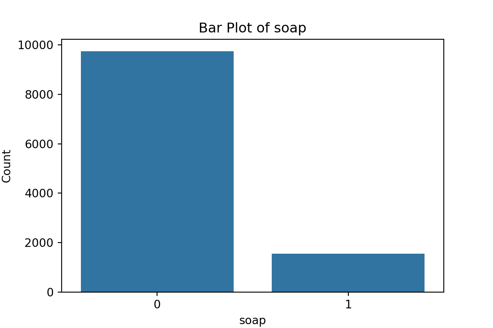

Prediction Policy Problems: Linear Models & Lasso Regression
Introducing the Prediction Policy Framework
In the video-lecture below you’ll be given a brief introduction to the prediction policy framework, and a primer on machine learning. Please take a moment to watch the 20 minute video.
Are you still wondering what the difference is between Machine
Learning and Econometrics? Take a few minutes to watch the video below.
After watching the videos, we have a practical exercise.
Predicting social assistance beneficiaries
A key problem in the design of Social Policies is the identification of people in need of social assistance. Social policies usually work with tight budgets and limited fiscal space. To allocate resources efficiently, benefits need to be targeted to those who need them most. Yet, identifying needs isn’t easy and misclassifications can have severe and irreversible effects on people in need.
Think of a social protection programme that allocates food vouchers to families with children at risk of malnutrition, or a programme that establishes needs-based school grants. What happens when these limited and finite resources are given to people that could do without, and those who need them most are excluded from them?
In this block we’ll work with real-world data from the country of Malawi to predict cash-transfer programme beneficiaries: People who live in poverty and need government assistance to make ends meet. The data comes from McBride and Nichol’s (2018) paper Retooling poverty targeting using out-of-sample validation and machine learning.
Discussion Points
The points below are meant to help you think critically about why
we’re about to embark on a machine learning - targeting exercise.
- Why is this a prediction policy problem? What would be a causal inference problem in this setting? Is it a regression or a classification problem?
-
Which variables and characteristics that we include in the prediction
model can make a big difference?
- Programmatically and conceptually, which type of characteristics do we want to consider for the prediction model?
- Technically, how do we select which variables to include in a prediction model? How is this different from a causal inference problem?
- What are the practical implications of the bias-variance tradeoff in this application?
- What are potential risks of such a data driven targeting approach?
If you’d like to learn more about Social Protection Policies, take a look at this video Alex has made for us with a brilliant summary of the field
(Yes, more videos!)
R practical
You can download the dataset by clicking on the button below.
The script below is a step by step on how to go about coding a predictive model using a linear regression. Despite its simplicity and transparency, i.e. the ease with which we can interpret its results, a linear model is not without challenges in machine learning.
- Preliminaries: working directory, libraries, data upload
rm(list = ls()) # this line cleans your Global Environment.
setwd("/Users/michellegonzalez/Documents/GitHub/Machine-Learning-for-Public-Policy") # set your working directory
# Libraries
cat("
If this is your first time using R, you need to install the libraries before loading them.
To do that, you can uncomment the line that starts with install.packages(...) by removing the # symbol.
")##
## If this is your first time using R, you need to install the libraries before loading them.
## To do that, you can uncomment the line that starts with install.packages(...) by removing the # symbol.
## #install.packages("dplyr", "tidyverse", "caret", "corrplot", "Hmisc", "modelsummary", "plyr", "gt", "stargazer", elasticnet")
library(dplyr) # core package for dataframe manipulation. Usually installed and loaded with the tidyverse, but sometimes needs to be loaded in conjunction to avoid warnings.
library(tidyverse) # a large collection of packages for data manipulation and visualisation.
library(caret) # a package with key functions that streamline the process for predictive modelling
library(corrplot) # a package to plot correlation matrices
library(Hmisc) # a package for general-purpose data analysis
library(modelsummary) # a package to describe model outputs
library(skimr) # a package to describe dataframes
library(plyr) # a package for data wrangling
library(gt) # a package to edit modelsummary (and other) tables
library(stargazer) # a package to visualise model output
data_malawi <- read_csv("malawi.csv") # the file is directly read from the working directory/folder previously set
- Get to know your data: visualisation and pre-processing
skim(data_malawi) # describes the dataset in a nice format | Name | data_malawi |
| Number of rows | 11280 |
| Number of columns | 38 |
| _______________________ | |
| Column type frequency: | |
| character | 2 |
| numeric | 36 |
| ________________________ | |
| Group variables | None |
Variable type: character
| skim_variable | n_missing | complete_rate | min | max | empty | n_unique | whitespace |
|---|---|---|---|---|---|---|---|
| region | 0 | 1 | 5 | 6 | 0 | 3 | 0 |
| eatype | 0 | 1 | 5 | 17 | 0 | 5 | 0 |
Variable type: numeric
| skim_variable | n_missing | complete_rate | mean | sd | p0 | p25 | p50 | p75 | p100 | hist |
|---|---|---|---|---|---|---|---|---|---|---|
| lnexp_pc_month | 0 | 1 | 7.360000e+00 | 6.800000e-01 | 4.7800e+00 | 6.890000e+00 | 7.310000e+00 | 7.760000e+00 | 1.106000e+01 | ▁▇▇▁▁ |
| hhsize | 0 | 1 | 4.550000e+00 | 2.340000e+00 | 1.0000e+00 | 3.000000e+00 | 4.000000e+00 | 6.000000e+00 | 2.700000e+01 | ▇▂▁▁▁ |
| hhsize2 | 0 | 1 | 2.613000e+01 | 2.799000e+01 | 1.0000e+00 | 9.000000e+00 | 1.600000e+01 | 3.600000e+01 | 7.290000e+02 | ▇▁▁▁▁ |
| agehead | 0 | 1 | 4.246000e+01 | 1.636000e+01 | 1.0000e+01 | 2.900000e+01 | 3.900000e+01 | 5.400000e+01 | 1.040000e+02 | ▅▇▅▂▁ |
| agehead2 | 0 | 1 | 2.070610e+03 | 1.618600e+03 | 1.0000e+02 | 8.410000e+02 | 1.521000e+03 | 2.916000e+03 | 1.081600e+04 | ▇▃▁▁▁ |
| north | 0 | 1 | 1.500000e-01 | 3.600000e-01 | 0.0000e+00 | 0.000000e+00 | 0.000000e+00 | 0.000000e+00 | 1.000000e+00 | ▇▁▁▁▂ |
| central | 0 | 1 | 3.800000e-01 | 4.900000e-01 | 0.0000e+00 | 0.000000e+00 | 0.000000e+00 | 1.000000e+00 | 1.000000e+00 | ▇▁▁▁▅ |
| rural | 0 | 1 | 8.700000e-01 | 3.300000e-01 | 0.0000e+00 | 1.000000e+00 | 1.000000e+00 | 1.000000e+00 | 1.000000e+00 | ▁▁▁▁▇ |
| nevermarried | 0 | 1 | 3.000000e-02 | 1.700000e-01 | 0.0000e+00 | 0.000000e+00 | 0.000000e+00 | 0.000000e+00 | 1.000000e+00 | ▇▁▁▁▁ |
| sharenoedu | 0 | 1 | 1.700000e-01 | 2.600000e-01 | 0.0000e+00 | 0.000000e+00 | 0.000000e+00 | 2.500000e-01 | 1.000000e+00 | ▇▂▁▁▁ |
| shareread | 0 | 1 | 6.100000e-01 | 3.800000e-01 | 0.0000e+00 | 3.300000e-01 | 6.700000e-01 | 1.000000e+00 | 1.000000e+00 | ▅▁▅▂▇ |
| nrooms | 0 | 1 | 2.500000e+00 | 1.300000e+00 | 0.0000e+00 | 2.000000e+00 | 2.000000e+00 | 3.000000e+00 | 1.600000e+01 | ▇▂▁▁▁ |
| floor_cement | 0 | 1 | 2.000000e-01 | 4.000000e-01 | 0.0000e+00 | 0.000000e+00 | 0.000000e+00 | 0.000000e+00 | 1.000000e+00 | ▇▁▁▁▂ |
| electricity | 0 | 1 | 6.000000e-02 | 2.300000e-01 | 0.0000e+00 | 0.000000e+00 | 0.000000e+00 | 0.000000e+00 | 1.000000e+00 | ▇▁▁▁▁ |
| flushtoilet | 0 | 1 | 3.000000e-02 | 1.700000e-01 | 0.0000e+00 | 0.000000e+00 | 0.000000e+00 | 0.000000e+00 | 1.000000e+00 | ▇▁▁▁▁ |
| soap | 0 | 1 | 1.400000e-01 | 3.400000e-01 | 0.0000e+00 | 0.000000e+00 | 0.000000e+00 | 0.000000e+00 | 1.000000e+00 | ▇▁▁▁▁ |
| bed | 0 | 1 | 3.200000e-01 | 4.700000e-01 | 0.0000e+00 | 0.000000e+00 | 0.000000e+00 | 1.000000e+00 | 1.000000e+00 | ▇▁▁▁▃ |
| bike | 0 | 1 | 3.600000e-01 | 4.800000e-01 | 0.0000e+00 | 0.000000e+00 | 0.000000e+00 | 1.000000e+00 | 1.000000e+00 | ▇▁▁▁▅ |
| musicplayer | 0 | 1 | 1.600000e-01 | 3.700000e-01 | 0.0000e+00 | 0.000000e+00 | 0.000000e+00 | 0.000000e+00 | 1.000000e+00 | ▇▁▁▁▂ |
| coffeetable | 0 | 1 | 1.200000e-01 | 3.200000e-01 | 0.0000e+00 | 0.000000e+00 | 0.000000e+00 | 0.000000e+00 | 1.000000e+00 | ▇▁▁▁▁ |
| iron | 0 | 1 | 2.100000e-01 | 4.000000e-01 | 0.0000e+00 | 0.000000e+00 | 0.000000e+00 | 0.000000e+00 | 1.000000e+00 | ▇▁▁▁▂ |
| dimbagarden | 0 | 1 | 3.200000e-01 | 4.700000e-01 | 0.0000e+00 | 0.000000e+00 | 0.000000e+00 | 1.000000e+00 | 1.000000e+00 | ▇▁▁▁▃ |
| goats | 0 | 1 | 2.100000e-01 | 4.100000e-01 | 0.0000e+00 | 0.000000e+00 | 0.000000e+00 | 0.000000e+00 | 1.000000e+00 | ▇▁▁▁▂ |
| dependratio | 0 | 1 | 1.120000e+00 | 9.500000e-01 | 0.0000e+00 | 5.000000e-01 | 1.000000e+00 | 1.500000e+00 | 9.000000e+00 | ▇▂▁▁▁ |
| hfem | 0 | 1 | 2.300000e-01 | 4.200000e-01 | 0.0000e+00 | 0.000000e+00 | 0.000000e+00 | 0.000000e+00 | 1.000000e+00 | ▇▁▁▁▂ |
| grassroof | 0 | 1 | 7.400000e-01 | 4.400000e-01 | 0.0000e+00 | 0.000000e+00 | 1.000000e+00 | 1.000000e+00 | 1.000000e+00 | ▃▁▁▁▇ |
| mortarpestle | 0 | 1 | 5.000000e-01 | 5.000000e-01 | 0.0000e+00 | 0.000000e+00 | 1.000000e+00 | 1.000000e+00 | 1.000000e+00 | ▇▁▁▁▇ |
| table | 0 | 1 | 3.600000e-01 | 4.800000e-01 | 0.0000e+00 | 0.000000e+00 | 0.000000e+00 | 1.000000e+00 | 1.000000e+00 | ▇▁▁▁▅ |
| clock | 0 | 1 | 2.000000e-01 | 4.000000e-01 | 0.0000e+00 | 0.000000e+00 | 0.000000e+00 | 0.000000e+00 | 1.000000e+00 | ▇▁▁▁▂ |
| ea | 0 | 1 | 7.606000e+01 | 1.885500e+02 | 1.0000e+00 | 8.000000e+00 | 1.900000e+01 | 4.525000e+01 | 9.010000e+02 | ▇▁▁▁▁ |
| EA | 0 | 1 | 2.372322e+07 | 7.241514e+06 | 1.0101e+07 | 2.040204e+07 | 2.090352e+07 | 3.053301e+07 | 3.120209e+07 | ▂▁▆▁▇ |
| hhwght | 0 | 1 | 2.387900e+02 | 7.001000e+01 | 7.9000e+01 | 2.076000e+02 | 2.471000e+02 | 2.913000e+02 | 3.587000e+02 | ▂▁▇▇▂ |
| psu | 0 | 1 | 2.372322e+07 | 7.241514e+06 | 1.0101e+07 | 2.040204e+07 | 2.090352e+07 | 3.053301e+07 | 3.120209e+07 | ▂▁▆▁▇ |
| strataid | 0 | 1 | 1.560000e+01 | 8.090000e+00 | 1.0000e+00 | 9.000000e+00 | 1.500000e+01 | 2.200000e+01 | 3.000000e+01 | ▅▇▇▆▅ |
| lnzline | 0 | 1 | 7.550000e+00 | 0.000000e+00 | 7.5500e+00 | 7.550000e+00 | 7.550000e+00 | 7.550000e+00 | 7.550000e+00 | ▁▁▇▁▁ |
| case_id | 0 | 1 | 2.372322e+10 | 7.241514e+09 | 1.0101e+10 | 2.040204e+10 | 2.090352e+10 | 3.053301e+10 | 3.120209e+10 | ▂▁▆▁▇ |
The dataset contains 38 variables and 11,280 observations.
Not all of these variables are relevant for our prediction model.
To find the labels and description of the variables, you can refer to the paper.
[hhsize, hhsize2, age_head, age_head2, regions, rural, never married,
share_of_adults_without_education, share_of_adults_who_can_read, number
of rooms, cement floor, electricity, flush toilet, soap, bed, bike,
music player, coffee table, iron, garden, goats]
Luckily for us, we have no missing values (n_missing in summary output)!
Many machine learning models cannot be trained when missing values are present (some exceptions exist).
Dealing with missingness is a non-trivial task:
First and foremost, we should assess whether there is a pattern to missingness and if so,
what that means to what we can learn from our (sub)population. If there is no discernible pattern,
we can proceed to delete the missing values or impute them. A more detailed explanation and course of action
can be found [here](https://stefvanbuuren.name/fimd/sec-MCAR.html).Feature selection: subsetting the dataset
As part of our data pre-processing we will subset the dataframe, such that only relevant variables are left. * Relevant: variables/features about a household that could help us determine whether they are in poverty. That way, we save some memory space; but also, we can call the full set of variables in a dataframe in one go!
variables to delete (not included in the identified set above):
[ea, EA, hhwght, psu, strataid, lnzline, case_id, eatype] N/B: Feature selection is a critical process (and we normally don’t have a paper to guide us through it): from a practical point of view, a model with less predictors may be easier to interpret. Also, some models may be negatively affected by non-informative predictors. This process is similar to traditional econometric modelling, but we should not conflate predictive and explanatory modelling. Importantly, please note that we are not interested in knowing why something happens, but rather in what is likely to happen given some known data. Hence:
# object:vector that contains the names of the variables that we want to get rid of
cols <- c("ea", "EA", "psu","hhwght", "strataid", "lnzline", "case_id","eatype")
# subset of the data_malawi object:datframe
data_malawi <- data_malawi[,-which(colnames(data_malawi) %in% cols)] # the minus sign indicates deletion of colsA few notes for you:
a dataframe follows the form data[rows,colums]
colnames() is a function that identifies the column names of an object of class dataframe
which() is an R base function that gives you the position of some value
a minus sign will delete either the identified position in the row or the column space
Data visualisation
A quick and effective way to take a first glance at our data is to plot histograms of relevant (numeric) features.
Recall (from the skim() dataframe summary output) that only two variables are non-numeric. However, we need to make a distinction between class factor and class numeric/numeric.
# identify categorical variables to transform from class numeric to factor
# using a for-loop: print the number of unique values by variable
for (i in 1:ncol(data_malawi)) { # iterate over the length of columns in the data_malawi df
# store the number of unique values in column.i
x <- length(unique(data_malawi[[i]]))
# print the name of column.i
print(colnames(data_malawi[i]))
# print the number of unique values in column.i
print(x)
}## [1] "lnexp_pc_month"
## [1] 11266
## [1] "hhsize"
## [1] 19
## [1] "hhsize2"
## [1] 19
## [1] "agehead"
## [1] 88
## [1] "agehead2"
## [1] 88
## [1] "north"
## [1] 2
## [1] "central"
## [1] 2
## [1] "rural"
## [1] 2
## [1] "nevermarried"
## [1] 2
## [1] "sharenoedu"
## [1] 47
## [1] "shareread"
## [1] 28
## [1] "nrooms"
## [1] 16
## [1] "floor_cement"
## [1] 2
## [1] "electricity"
## [1] 2
## [1] "flushtoilet"
## [1] 2
## [1] "soap"
## [1] 2
## [1] "bed"
## [1] 2
## [1] "bike"
## [1] 2
## [1] "musicplayer"
## [1] 2
## [1] "coffeetable"
## [1] 2
## [1] "iron"
## [1] 2
## [1] "dimbagarden"
## [1] 2
## [1] "goats"
## [1] 2
## [1] "dependratio"
## [1] 62
## [1] "hfem"
## [1] 2
## [1] "grassroof"
## [1] 2
## [1] "mortarpestle"
## [1] 2
## [1] "table"
## [1] 2
## [1] "clock"
## [1] 2
## [1] "region"
## [1] 3# If you want to optimise your code, using for loops is not ideal. In R, there exists a family of functions called Apply whose purpose is to apply some function to all the elements in an object. For the time being, iterating over 38 columns is fast enough and we don't need to think about optimising our code. We'll also see an example later on on how to use one of the functions from the apply family. You can also refer to this blog (https://www.r-bloggers.com/2021/05/apply-family-in-r-apply-lapply-sapply-mapply-and-tapply/) if you want to learn more about it. Notice that we have a few variables with 2 unique values and one variable with 3 unique values. We should transform these into factor() class. Recall from the introduction tab that in object-oriented programming correctly identifying the variable type (vector class) is crucial for data manipulation and arithmetic operations. We can do this one by one, or in one shot. I’ll give an example of both:
# == One by one == #
# transform a variable in df to factor, and pass it on to the df to keep the change
# first, sneak peak at the first 5 observations (rows) of the vector
head(data_malawi$north) # returns 1 = North ## [1] 1 1 1 1 1 1data_malawi$north <- factor(data_malawi$north, levels = c(0, 1), labels = c("NotNorth", "North"))
str(data_malawi$north) # returns 2?## Factor w/ 2 levels "NotNorth","North": 2 2 2 2 2 2 2 2 2 2 ...head(data_malawi$north) # returns north (which was = 1 before), hooray!## [1] North North North North North North
## Levels: NotNorth North# R stores factors as 1...n; but the label remains the initial numeric value assigned (1 for true, 0 false)
# We have also explicityly told 0 is NotNorth and 1 is North (by the order that follows the line of code)
# transform all binary/categorical data into factor class
min_count <- 3 # vector: 3 categories is our max number of categories found
# == Apply family: function apply and lapply==#
# apply a length(unique(x)) function to all the columns (rows = 1, columns = 2) of the data_malawi dataframe, then
# store boolean (true/false) if the number of unique values is lower or equal to the min_count vector
n_distinct2 <- apply(data_malawi, 2, function(x) length(unique(x))) <= min_count
# print(n_distinct2) # prints boolean indicator object (so you know what object you have created)
# select the identified categorical variables and transform them into factors
data_malawi[n_distinct2] <- lapply(data_malawi[n_distinct2], factor) Visualise your data: histograms, bar plots, tables
Let’s start with histograms of numeric (continuous) variables.
# == HISTOGRAMS == #
# Select all variables in the dataframe which are numeric, and can therefore be plotted as a histogram.
malawi_continuous <- as.data.frame(data_malawi %>% select_if(~is.numeric(.)))
# a quick glance at the summary statistics of our continuous variables
datasummary_skim(malawi_continuous) # from modelsummary pkg, output as plot in Plot Viewer| Unique (#) | Missing (%) | Mean | SD | Min | Median | Max | ||
|---|---|---|---|---|---|---|---|---|
| lnexp_pc_month | 11266 | 0 | 7.4 | 0.7 | 4.8 | 7.3 | 11.1 | |
| hhsize | 19 | 0 | 4.5 | 2.3 | 1.0 | 4.0 | 27.0 | |
| hhsize2 | 19 | 0 | 26.1 | 28.0 | 1.0 | 16.0 | 729.0 | |
| agehead | 88 | 0 | 42.5 | 16.4 | 10.0 | 39.0 | 104.0 | |
| agehead2 | 88 | 0 | 2070.6 | 1618.6 | 100.0 | 1521.0 | 10816.0 | |
| sharenoedu | 47 | 0 | 0.2 | 0.3 | 0.0 | 0.0 | 1.0 | |
| shareread | 28 | 0 | 0.6 | 0.4 | 0.0 | 0.7 | 1.0 | |
| nrooms | 16 | 0 | 2.5 | 1.3 | 0.0 | 2.0 | 16.0 | |
| dependratio | 62 | 0 | 1.1 | 0.9 | 0.0 | 1.0 | 9.0 |
# Hmisc package, quick and painless hist.data.frame() function
# but first, make sure to adjust the number of rows and columns to be displayed on your Plot Viewer
par(mfrow = c(3, 3)) # 3 rows * 3 columns (9 variables)
hist.data.frame(malawi_continuous)
Now, let’s plot bar graphs and write tables of factor (categorical) variables:
# == BAR GRAPHS == #
malawi_factor <- data_malawi %>% select_if(~is.factor(.)) # subset of the data with all factor variables
par(mfrow = c(3, 7)) # 7 rows, 3 columns (21 variables = length of df)
for (i in 1:ncol(malawi_factor)) { # Loop over all the columns in the factor df subset
# store data in column.i as x
x <- malawi_factor[,i]
# store name of column.i as x_name
x_name <- colnames(malawi_factor[i])
# Plot bar graph of x using Rbase plotting tools
barplot(table(x),
main = paste(x_name)
)
}
# == TABLES == #
# We can also show tables of all factor variables (to get precise frequencies not displayed in bar plots)
llply(.data=malawi_factor, .fun=table) # create tables of all the variables in dataframe using the plyr package## $north
##
## NotNorth North
## 9600 1680
##
## $central
##
## 0 1
## 6960 4320
##
## $rural
##
## 0 1
## 1440 9840
##
## $nevermarried
##
## 0 1
## 10930 350
##
## $floor_cement
##
## 0 1
## 9036 2244
##
## $electricity
##
## 0 1
## 10620 660
##
## $flushtoilet
##
## 0 1
## 10962 318
##
## $soap
##
## 0 1
## 9740 1540
##
## $bed
##
## 0 1
## 7653 3627
##
## $bike
##
## 0 1
## 7194 4086
##
## $musicplayer
##
## 0 1
## 9426 1854
##
## $coffeetable
##
## 0 1
## 9956 1324
##
## $iron
##
## 0 1
## 8962 2318
##
## $dimbagarden
##
## 0 1
## 7658 3622
##
## $goats
##
## 0 1
## 8856 2424
##
## $hfem
##
## 0 1
## 8697 2583
##
## $grassroof
##
## 0 1
## 2953 8327
##
## $mortarpestle
##
## 0 1
## 5635 5645
##
## $table
##
## 0 1
## 7249 4031
##
## $clock
##
## 0 1
## 9039 2241
##
## $region
##
## Centre North South
## 4320 1680 5280What have we learned from the data visualisation?
Nothing worrying about the data itself. McBride and Nichols did a good job of pre-processing the data for us. No pesky missing values, or unknown categories.
From the bar plots, we can see that for the most part, people tend not to own assets. Worryingly, there is a lack of soap, flush toilets and electricity, all of which are crucial for human capital (health and education).
From the histograms, we can see log per capita expenditure is normally distributed, but if we remove the log, it’s incredibly skewed. Poverty is endemic. Households tend not to have too many educated individuals, and their size is non-trivially large (with less rooms than people need).
Relationships between features
To finalise our exploration of the dataset, we should define:
the target variable (a.k.a. outcome of interest)
correlational insights
Let’s visualise two distinct correlation matrices; for our numeric dataframe, which includes our target variable, we will plot a Pearson r correlation matrix. For our factor dataframe, to which we will add our continuous target, we will plot a Spearman rho correlation matrix. Both types of correlation coefficients are interpreted the same (0 = no correlation, 1 perfect positive correlation, -1 perfect negative correlation).
# = = PEARSON CORRELATION MATRIX = = #
M <- cor(malawi_continuous) # create a correlation matrix of the continuous dataset, cor() uses Pearson's correlation coefficient as default. This means we can only take the correlation between continuous variables
corrplot(M, method="circle", addCoef.col ="black", number.cex = 0.8) # visualise it in a nice way We can already tell that the size of the household and dependent ratio
are highly negatively correlated to our target variable.
We can already tell that the size of the household and dependent ratio
are highly negatively correlated to our target variable.
# = = SPEARMAN CORRELATION MATRIX = = #
malawi_factorC <- as.data.frame(lapply(malawi_factor,as.numeric)) # coerce dataframe to numeric, as the cor() command only takes in numeric types
malawi_factorC$lnexp_pc_month <- malawi_continuous$lnexp_pc_month # include target variable in the dataframe
M2 <- cor(malawi_factorC, method = "spearman")
corrplot(M2, method="circle", addCoef.col ="black", number.cex = 0.3) # visualise it in a nice wayOwnership of some assets stands out: soap, a cement floor, electricity, a bed… ownership of these (and a couple of other) assets is positively correlated to per capita expenditure. Living in a rural area, on the other hand, is negtively correlated to our target variable.
We can also spot some correlation coefficients that equal zero. In some situations, the data generating mechanism can create predictors that only have a single unique value (i.e. a “zero-variance predictor”). For many ML models (excluding tree-based models), this may cause the model to crash or the fit to be unstable. Here, the only \(0\) we’ve spotted is not in relation to our target variable.
But we do observe some near-zero-variance predictors. Besides
uninformative, these can also create unstable model fits. There’s a few
strategies to deal with these; the quickest solution is to remove them.
A second option, which is especially interesting in scenarios with a
large number of predictors/variables, is to work with penalised models.
We’ll discuss this option below.
- Model fit: data partition and performance evaluation parameters
We now have a general idea of the structure of the data we are working with, and what we’re trying to predict: per capita expenditures, which we believe are a proxy for poverty prevalence. Measured by the log of per capita monthly expenditure in our dataset, the variable is named lnexp_pc_month.
The next step is create a simple linear model (OLS) to predict per capita expenditure using the variables in our dataset, and introduce the elements with which we will evaluate our model.
Data Partinioning
When we want to build predictive models for machine learning purposes, it is important to have (at least) two data sets. A training data set from which our model will learn, and a test data set containing the same features as our training data set; we use the second dataset to see how well our predictive model extrapolates to other samples (i.e. is it generalisable?). To split our main data set into two, we will work with an 80/20 split.
The 80/20 split has its origins in the Pareto Principle, which states that ‘in most cases, 80% of effects from from 20% of causes’. Though there are other test/train splitting options, this partitioning method is a good place to start, and indeed standard in the machine learning field.
# First, set a seed to guarantee replicability of the process
set.seed(1234) # you can use any number you want, but to replicate the results in this tutorial you need to use this number
# We could split the data manually, but the caret package includes an useful function
train_idx <- createDataPartition(data_malawi$lnexp_pc_month, p = .8, list = FALSE, times = 1)
head(train_idx) # notice that observation 5 corresponds to resame indicator 7 and so on. We're shuffling and picking!## Resample1
## [1,] 1
## [2,] 2
## [3,] 4
## [4,] 5
## [5,] 7
## [6,] 8Train_df <- data_malawi[ train_idx,]
Test_df <- data_malawi[-train_idx,]
# Note that we have created training and testing dataframes as an 80/20 split of the original dataset.Prediction with Linear Models
We will start by fitting a predictive model using the training dataset; that is, our target variable log of monthly per capita expenditures or lnexp_pc_month will be a \(Y\) dependent variable in a linear model \(Y_i = \alpha + x'\beta_i + \epsilon_i\), and the remaining features in the data frame correspond to the row vectors \(x'\beta\).
model1 <- lm(lnexp_pc_month ~ .,Train_df) # the dot after the squiggle ~ asks the lm() function tu use all other variables in the dataframe as predictors to the dependent variable lnexp_pc_month
stargazer(model1, type = "text") # printed in the console as text##
## ===============================================
## Dependent variable:
## ---------------------------
## lnexp_pc_month
## -----------------------------------------------
## hhsize -0.292***
## (0.006)
##
## hhsize2 0.012***
## (0.0005)
##
## agehead 0.003
## (0.002)
##
## agehead2 -0.00004**
## (0.00002)
##
## northNorth 0.080***
## (0.014)
##
## central1 0.252***
## (0.010)
##
## rural1 -0.055***
## (0.017)
##
## nevermarried1 0.271***
## (0.028)
##
## sharenoedu -0.105***
## (0.020)
##
## shareread 0.075***
## (0.015)
##
## nrooms 0.039***
## (0.004)
##
## floor_cement1 0.102***
## (0.017)
##
## electricity1 0.372***
## (0.027)
##
## flushtoilet1 0.329***
## (0.033)
##
## soap1 0.215***
## (0.014)
##
## bed1 0.104***
## (0.013)
##
## bike1 0.094***
## (0.011)
##
## musicplayer1 0.111***
## (0.015)
##
## coffeetable1 0.137***
## (0.019)
##
## iron1 0.130***
## (0.014)
##
## dimbagarden1 0.102***
## (0.010)
##
## goats1 0.080***
## (0.012)
##
## dependratio -0.045***
## (0.006)
##
## hfem1 -0.066***
## (0.012)
##
## grassroof1 -0.096***
## (0.016)
##
## mortarpestle1 0.033***
## (0.010)
##
## table1 0.051***
## (0.011)
##
## clock1 0.058***
## (0.014)
##
## regionNorth
##
##
## regionSouth
##
##
## Constant 7.978***
## (0.044)
##
## -----------------------------------------------
## Observations 9,024
## R2 0.599
## Adjusted R2 0.597
## Residual Std. Error 0.428 (df = 8995)
## F Statistic 479.041*** (df = 28; 8995)
## ===============================================
## Note: *p<0.1; **p<0.05; ***p<0.01# We can also estimate iid and robust standard errors, using the model output package modelsummary()
ms <- modelsummary(model1,
vcov = list("iid","robust"), # include iid and HC3 (robust) standard errors
statistic = c("p = {p.value}","s.e. = {std.error}"),
stars = TRUE,
output = "gt"
) # plotted as an image / object in "gt" format
ms %>% tab_header(
title = md("**Linear Models with iid and robust s.e.**"),
subtitle = md("Target: (log) per capita monthly expenditure")
)| Linear Models with iid and robust s.e. | ||
| Target: (log) per capita monthly expenditure | ||
| (1) | (2) | |
|---|---|---|
| (Intercept) | 7.978*** | 7.978*** |
| p = <0.001 | p = <0.001 | |
| s.e. = 0.044 | s.e. = 0.069 | |
| hhsize | -0.292*** | -0.292*** |
| p = <0.001 | p = <0.001 | |
| s.e. = 0.006 | s.e. = 0.029 | |
| hhsize2 | 0.012*** | 0.012*** |
| p = <0.001 | p = <0.001 | |
| s.e. = 0.000 | s.e. = 0.003 | |
| agehead | 0.003 | 0.003 |
| p = 0.108 | p = 0.137 | |
| s.e. = 0.002 | s.e. = 0.002 | |
| agehead2 | 0.000* | 0.000* |
| p = 0.015 | p = 0.032 | |
| s.e. = 0.000 | s.e. = 0.000 | |
| northNorth | 0.080*** | 0.080*** |
| p = <0.001 | p = <0.001 | |
| s.e. = 0.014 | s.e. = 0.015 | |
| central1 | 0.252*** | 0.252*** |
| p = <0.001 | p = <0.001 | |
| s.e. = 0.010 | s.e. = 0.010 | |
| rural1 | -0.055** | -0.055** |
| p = 0.001 | p = 0.001 | |
| s.e. = 0.017 | s.e. = 0.017 | |
| nevermarried1 | 0.271*** | 0.271*** |
| p = <0.001 | p = <0.001 | |
| s.e. = 0.028 | s.e. = 0.037 | |
| sharenoedu | -0.105*** | -0.105*** |
| p = <0.001 | p = <0.001 | |
| s.e. = 0.020 | s.e. = 0.021 | |
| shareread | 0.075*** | 0.075*** |
| p = <0.001 | p = <0.001 | |
| s.e. = 0.015 | s.e. = 0.015 | |
| nrooms | 0.039*** | 0.039*** |
| p = <0.001 | p = <0.001 | |
| s.e. = 0.004 | s.e. = 0.004 | |
| floor_cement1 | 0.102*** | 0.102*** |
| p = <0.001 | p = <0.001 | |
| s.e. = 0.017 | s.e. = 0.018 | |
| electricity1 | 0.372*** | 0.372*** |
| p = <0.001 | p = <0.001 | |
| s.e. = 0.027 | s.e. = 0.029 | |
| flushtoilet1 | 0.329*** | 0.329*** |
| p = <0.001 | p = <0.001 | |
| s.e. = 0.033 | s.e. = 0.042 | |
| soap1 | 0.215*** | 0.215*** |
| p = <0.001 | p = <0.001 | |
| s.e. = 0.014 | s.e. = 0.014 | |
| bed1 | 0.104*** | 0.104*** |
| p = <0.001 | p = <0.001 | |
| s.e. = 0.013 | s.e. = 0.013 | |
| bike1 | 0.094*** | 0.094*** |
| p = <0.001 | p = <0.001 | |
| s.e. = 0.011 | s.e. = 0.011 | |
| musicplayer1 | 0.111*** | 0.111*** |
| p = <0.001 | p = <0.001 | |
| s.e. = 0.015 | s.e. = 0.015 | |
| coffeetable1 | 0.137*** | 0.137*** |
| p = <0.001 | p = <0.001 | |
| s.e. = 0.019 | s.e. = 0.019 | |
| iron1 | 0.130*** | 0.130*** |
| p = <0.001 | p = <0.001 | |
| s.e. = 0.014 | s.e. = 0.014 | |
| dimbagarden1 | 0.102*** | 0.102*** |
| p = <0.001 | p = <0.001 | |
| s.e. = 0.010 | s.e. = 0.010 | |
| goats1 | 0.080*** | 0.080*** |
| p = <0.001 | p = <0.001 | |
| s.e. = 0.012 | s.e. = 0.012 | |
| dependratio | -0.045*** | -0.045*** |
| p = <0.001 | p = <0.001 | |
| s.e. = 0.006 | s.e. = 0.009 | |
| hfem1 | -0.066*** | -0.066*** |
| p = <0.001 | p = <0.001 | |
| s.e. = 0.012 | s.e. = 0.013 | |
| grassroof1 | -0.096*** | -0.096*** |
| p = <0.001 | p = <0.001 | |
| s.e. = 0.016 | s.e. = 0.016 | |
| mortarpestle1 | 0.033** | 0.033** |
| p = 0.001 | p = 0.001 | |
| s.e. = 0.010 | s.e. = 0.010 | |
| table1 | 0.051*** | 0.051*** |
| p = <0.001 | p = <0.001 | |
| s.e. = 0.011 | s.e. = 0.012 | |
| clock1 | 0.058*** | 0.058*** |
| p = <0.001 | p = <0.001 | |
| s.e. = 0.014 | s.e. = 0.014 | |
| Num.Obs. | 9024 | 9024 |
| R2 | 0.599 | 0.599 |
| R2 Adj. | 0.597 | 0.597 |
| AIC | 10317.3 | 10317.3 |
| BIC | 10530.5 | 10530.5 |
| Log.Lik. | -5128.658 | -5128.658 |
| RMSE | 0.43 | 0.43 |
| Std.Errors | IID | HC3 |
| + p < 0.1, * p < 0.05, ** p < 0.01, *** p < 0.001 | ||
# You can see that the variable region was not included in the output (this is because we already have dummies of north (not north = south), and central region). We may need to clean our dataset un some further steps. Recall that one of the assumptions of a linear model is that errors are independent and identically distributed. We could run some tests to determine this, but with the contrast of the iid and robust errors (HC3) in the modelsummary output table we can already tell that this is not an issue/something to worry about in our estimations.
Besides the regression output table, we can can also visualise the magnitude and significance of the coefficients with a plot. The further away the variable (dot) marker is from the \(0\) line, the larger the magnitude.
modelplot(model1) +
aes(color = ifelse(p.value < 0.001, "Significant", "Not significant")) +
scale_color_manual(values = c("grey", "black")
) # grey points indicate statistically insignificat (p>0.001) coefficient estimates
# The scale of the plot is large due to the intercept estimateNot unlike what we saw in out correlation matrix, household size, electricity, having a flush toilet… the magnitude of the impact of these variables on monthly per capita expenditure is significantly larger than that of other assets/predictors.
Performance Indicators
In predictive modelling, we are interested in the following performance metrics:
Model residuals: recall residuals are the observed value minus the predicted value. We can estimate a model’s Root Mean Squared Error (RMSE) or the Mean Absolute Error (MAE). Residuals allow us to quantify the extent to which the predicted response value (for a given observation) is close to the true response value. Small RMSE or MAE values indicate that the prediction is close to the true observed value.
The p-values: represented by stars *** (and a pre-defined critical threshold, e.g. 0.05), they point to the predictive power of each feature in the model; i.e. that the event does not occur by chance. In the same vein, the magnitude of the coefficient is also important, especially given that we are interested in explanatory power and not causality.
The R-squared: arguably the go-to indicator for performance assessment. Low R^2 values are not uncommon, especially in the social sciences. However, when hoping to use a model for predictive purposes, a low R^2 is a bad sign, large number of statistically significant features notwithstanding. The drawback from relying solely on this measure is that it does not take into consideration the problem of model over-fitting; i.e. you can inflate the R-squared by adding as many variables as you want, even if those variables have little predicting power. This method will yield great results in the training data, but will under perform when extrapolating the model to the test (or indeed any other) data set.
Residuals
# = = Model Residuals = = #
print(summary(model1$residuals))## Min. 1st Qu. Median Mean 3rd Qu. Max.
## -3.483927 -0.288657 -0.007872 0.000000 0.266950 1.887123Recall that the residual is estimated as the true (observed) value minus the predicted value. Thus: the max(imum) error of 1.88 suggests that the model under-predicted expenditure by circa (log) $2 (or $6.5) for at least one observation. Fifty percent of the predictions (between the first and third quartiles) lie between (log) $0.28 and (log) $0.26 over the true value. From the estimation of the prediction residuals we obtain the popular measure of performance evaluation known as the Root Mean Squared Error (RMSE, for short).
# Calculate the RMSE for the training dataset, or the in-sample RMSE.
# 1. Predict values on the training dataset
p0 <- predict(model1, Train_df)
# 2. Obtain the errors (predicted values minus observed values of target variable)
error0 <- p0 - Train_df[["lnexp_pc_month"]]
# 3. In-sample RMSE
RMSE_insample <- sqrt(mean(error0 ^ 2))
print(RMSE_insample)## [1] 0.4271572# TIP: Notice that the in-sample RMSE we have just estimated was also printed in the linear model (regression) output tables!
# The table printed with the stargazer package returns this value at the bottom, under the header Residual Std. Error (0.428)
# The table printed with the modelsummary package returns this value at the bottom, under the header RMSE (0.43), rounded up. The RMSE (0.4271) gives us an absolute number that indicates how much our predicted values deviate from the true (observed) number. This is all in reference to the target vector (a.k.a. our outcome variable). Think of the question, how far, on average, are the residuals away from zero? Generally speaking, the lower the value, the better the model fit. Besides being a good measure of goodness of fit, the RMSE is also useful for comparing the ability of our model to make predictions on different (e.g. test) data sets. The in-sample RMSE should be close or equal to the out-of-sample RMSE.
In this case, our RMSE is ~0.4 units away from zero. Given the range of the target variable (roughly 4 to 11), the number seems to be relatively small and close enough to zero.
P-values Recall the large number of statistically significant features in our model. The coefficient plot, where we indicate that statistical significance is defined by a p-value threshold of 0.001, a strict rule (given the popularity of the more relaxed 0.05 critical value), shows that only 4 out of 29 features/variables do not meet this criterion. We can conclude that the features we have selected are relevant predictors.
R-squared
print(summary(model1))##
## Call:
## lm(formula = lnexp_pc_month ~ ., data = Train_df)
##
## Residuals:
## Min 1Q Median 3Q Max
## -3.4839 -0.2887 -0.0079 0.2669 1.8871
##
## Coefficients: (2 not defined because of singularities)
## Estimate Std. Error t value Pr(>|t|)
## (Intercept) 7.978e+00 4.409e-02 180.945 < 2e-16 ***
## hhsize -2.919e-01 6.429e-03 -45.397 < 2e-16 ***
## hhsize2 1.206e-02 4.811e-04 25.067 < 2e-16 ***
## agehead 2.749e-03 1.712e-03 1.606 0.10835
## agehead2 -4.168e-05 1.717e-05 -2.428 0.01519 *
## northNorth 8.001e-02 1.439e-02 5.560 2.78e-08 ***
## central1 2.521e-01 1.023e-02 24.639 < 2e-16 ***
## rural1 -5.483e-02 1.687e-02 -3.250 0.00116 **
## nevermarried1 2.706e-01 2.839e-02 9.533 < 2e-16 ***
## sharenoedu -1.045e-01 2.006e-02 -5.212 1.91e-07 ***
## shareread 7.514e-02 1.502e-02 5.004 5.72e-07 ***
## nrooms 3.898e-02 4.032e-03 9.670 < 2e-16 ***
## floor_cement1 1.016e-01 1.742e-02 5.835 5.58e-09 ***
## electricity1 3.718e-01 2.696e-02 13.793 < 2e-16 ***
## flushtoilet1 3.295e-01 3.263e-02 10.099 < 2e-16 ***
## soap1 2.150e-01 1.413e-02 15.220 < 2e-16 ***
## bed1 1.040e-01 1.297e-02 8.019 1.20e-15 ***
## bike1 9.395e-02 1.064e-02 8.831 < 2e-16 ***
## musicplayer1 1.111e-01 1.451e-02 7.658 2.08e-14 ***
## coffeetable1 1.369e-01 1.866e-02 7.338 2.36e-13 ***
## iron1 1.302e-01 1.378e-02 9.455 < 2e-16 ***
## dimbagarden1 1.018e-01 1.017e-02 10.017 < 2e-16 ***
## goats1 7.964e-02 1.168e-02 6.820 9.68e-12 ***
## dependratio -4.501e-02 5.848e-03 -7.697 1.55e-14 ***
## hfem1 -6.570e-02 1.238e-02 -5.307 1.14e-07 ***
## grassroof1 -9.590e-02 1.575e-02 -6.089 1.18e-09 ***
## mortarpestle1 3.288e-02 1.027e-02 3.200 0.00138 **
## table1 5.074e-02 1.149e-02 4.417 1.01e-05 ***
## clock1 5.840e-02 1.423e-02 4.103 4.11e-05 ***
## regionNorth NA NA NA NA
## regionSouth NA NA NA NA
## ---
## Signif. codes: 0 '***' 0.001 '**' 0.01 '*' 0.05 '.' 0.1 ' ' 1
##
## Residual standard error: 0.4278 on 8995 degrees of freedom
## Multiple R-squared: 0.5986, Adjusted R-squared: 0.5973
## F-statistic: 479 on 28 and 8995 DF, p-value: < 2.2e-16We have printed our model’s output once more, now using the r base command summary(). The other packages (stargazer and modelsummary) are great if you want to export your results in text, html, latex format, but not necessary if you just want to print your output. The estimated (Multiple) R-squared of 0.59 tells us that our model predicts around 60 per cent of the variation in the independent variable (our target, log of per capita monthly expenditures). Also note that when we have a large number of predictors, it’s best to look at the Adjusted R-squared (of 0.59), which corrects or adjusts for this by only increasing when a new feature improves the model more so than what would be expected by chance.
Out of sample predictions
Now that we have built and evaluated our model in the training dataset, we can proceed to make out-of-sample predictions. That is, see how our model performs in the test dataset.
p <- predict(model1, Test_df)
cat("observed summary statistics of target variable in full dataset")## observed summary statistics of target variable in full datasetprint(summary(data_malawi$lnexp_pc_month))## Min. 1st Qu. Median Mean 3rd Qu. Max.
## 4.777 6.893 7.305 7.359 7.758 11.064cat("predictions based on the training dataset")## predictions based on the training datasetprint(summary(p0))## Min. 1st Qu. Median Mean 3rd Qu. Max.
## 6.011 6.980 7.308 7.357 7.661 10.143cat("predictions from the testing dataset")## predictions from the testing datasetprint(summary(p))## Min. 1st Qu. Median Mean 3rd Qu. Max.
## 6.052 6.999 7.323 7.375 7.670 9.774The summary statistics for the predictions with the train and test datasets are very close to one another. This is an indication that our model extrapolates well to other datasets. Compared to the observed summary statistics of the target variable, they’re relatively close, with the largest deviations observed at the minimum and maximum values.
The bias-variance tradeoff in practice
We previously mentioned that the RMSE metric could also be used to compare between train and test model predictions. Let us estimate the out-of-sample RMSE:
error <- p - Test_df[["lnexp_pc_month"]] # predicted values minus actual values
RMSE_test <- sqrt(mean(error^2))
print(RMSE_test) # this is known as the out-of-sample RMSE## [1] 0.4284404Notice that the in-sample RMSE [\(0.4271572\)] is very close to the out-of-sample RMSE [\(0.4284404\)]. This means that our model makes consistent predictions across different data sets. We also know by now that these predictions are relatively good. At least, we hit the mark around 60 per cent of the time. What we are observing here is a model that has found a balance between bias and variance. However, both measures can still improve. For one, McBride and Nichols (2018) report > 80 per cent accuracy in their poverty predictions for Malawi. But please note that, at this point, we are not replicating their approach. They document using a classification model, which means that they previously used a poverty line score and divided the sample between individuals below and above the poverty line.
What do we mean by bias in a model?
The bias is the difference between the average prediction of our model and the true (observed) value. Minimising the bias is analogous to minimising the RMSE.
What do we mean by variance in a model?
It is the observed variability of our model prediction for a given data point (how much the model can adjust given the data set). A model with high variance would yield low error values in the training data but high errors in the test data.
Hence, consistent in and out of sample RMSE scores = bias/variance balance.
Fine-tuning model parameters
Can we fine-tune model parameters? The quick answer is yes! Every algorithm has a set of parameters that can be adjusted/fine-tuned to improve our estimations. Even in the case of a simple linear model, we can try our hand at fine-tuning with, for example, cross-validation.
What is cross-validation?
Broadly speaking, it is a technique that allows us to assess the performance of our machine learning model. How so? Well, it looks at the ‘stability’ of the model. It’s a measure of how well our model would work on new, unseen data (is this ringing a bell yet?); i.e. it has correctly observed and recorded the patterns in the data and has not captured too much noise (what we know as the error term, or what we are unable to explain with our model). K-fold cross-validation is a good place to start for such a thing. In the words of The Internet™, what k-fold cross validation does is:
Split the input dataset into K groups
For each group:
- Take one group as the reserve or test data set.
- Use remaining groups as the training dataset.
- Fit the model on the training set and evaluate the performance of the model using the test set.TL;DR We’re improving our splitting technique!
An Illustration by Eugenia Anello

# Let's rumble!
set.seed(12345)
# create an object that defines the training method as cross-validation and number of folds (caret pkg)
cv_10fold <- trainControl(
method = "cv", #cross-validation
number = 10 # k-fold = 10-fold (split the data into 10 similar-sized samples)
)
set.seed(12345)
# train a model
ols_kfold <- train(
lnexp_pc_month ~ .,
data = Train_df,
method = 'lm', # runs a linear regression model (or ols)
trControl = cv_10fold # use 10 folds to cross-validate
)
ols_kfold2 <- train(
lnexp_pc_month ~ .,
data = Test_df,
method = 'lm', # runs a linear regression model (or ols)
trControl = cv_10fold # use 10 folds to cross-validate
)
ols_kfold3 <- train(
lnexp_pc_month ~ .,
data = data_malawi,
method = 'lm', # runs a linear regression model (or ols)
trControl = cv_10fold # use 10 folds to cross-validate
)
cat(" Linear model with train dataset")## Linear model with train datasetprint(ols_kfold)## Linear Regression
##
## 9024 samples
## 29 predictor
##
## No pre-processing
## Resampling: Cross-Validated (10 fold)
## Summary of sample sizes: 8121, 8121, 8123, 8122, 8121, 8121, ...
## Resampling results:
##
## RMSE Rsquared MAE
## 0.4295064 0.5947776 0.3365398
##
## Tuning parameter 'intercept' was held constant at a value of TRUEcat(" Linear model with test dataset")## Linear model with test datasetprint(ols_kfold2)## Linear Regression
##
## 2256 samples
## 29 predictor
##
## No pre-processing
## Resampling: Cross-Validated (10 fold)
## Summary of sample sizes: 2030, 2030, 2030, 2030, 2031, 2031, ...
## Resampling results:
##
## RMSE Rsquared MAE
## 0.4312944 0.5991526 0.3379473
##
## Tuning parameter 'intercept' was held constant at a value of TRUEcat(" Linear model with full dataset")## Linear model with full datasetprint(ols_kfold3)## Linear Regression
##
## 11280 samples
## 29 predictor
##
## No pre-processing
## Resampling: Cross-Validated (10 fold)
## Summary of sample sizes: 10152, 10152, 10152, 10152, 10152, 10152, ...
## Resampling results:
##
## RMSE Rsquared MAE
## 0.4291473 0.5965825 0.3363802
##
## Tuning parameter 'intercept' was held constant at a value of TRUEHaving cross-validated our model with 10 folds, we can see that the results are virtually the same. We have a RMSE of around .43, an R^2 of .59, (and a MAE of .33). We ran the same model for the train, test and full datasets and find results are consistent. Recall the R^2 tells us the model’s predictive ability and the RMSE and MAE the model’s accuracy.
NOTE: k-fold cross-validation replaces our original
80/20 split (we don’t need to do that anymore!) Therefore, we use the
full dataset in the train() function. Using the train, test and full
datasets in the example above was just for pedagogical purposes but it
is no longer necessary and we can use the reported estimates of R^2
(close to 1!), RMSE (close to 0!) and MAE (let’s go low!) for model
assessment without comparing them to another set of predictions. These
reported parameters are estimated as the average of the R^2, RMSE, and
MAE for all the folds.
- Feature selection with Lasso linear regression
An OLS regression is not the only model that can be written in the form of \(Y_i = \alpha + \beta_1X_{1i}, \beta_2X_{2i},..., \beta_pX_{pi}+ u_i\). In this section we will discuss ‘penalised’ models, which can also be expressed as a linear relationship between parameters. Penalised regression models are also known as regression shrinkage methods, and they take their name after the colloquial term for coefficient regularisation, ‘shrinkage’ of estimated coefficients. The goal of penalised models, as opposed to a traditional linear model, is not to minimise bias (least squares approach), but to reduce variance by adding a constraint to the equation and effectively pushing coefficient parameters towards 0. This results in the the worse model predictors having a coefficient of zero or close to zero.
Consider a scenario where you have hundreds of predictors. Which covariates are truly important for our known outcome? Including all of the predictors leads to over-fitting. We’ll find that the R^2 value is high, and conclude that our in-sample fit is good. However, this may lead to bad out-of-sample predictions. Model selection is a particularly challenging endeavour when we encounter high-dimensional data; i.e. when the number of variables is close to or larger than the number of observations. Some examples where you may encounter high-dimensional data include:
Cross-country analyses: we have a small and finite number of countries, but we may collect/observe as many variables as we want.
Cluster-population analyses: we wish to understand the outcome of some unique population \(n\), e.g. all students from classroom A. We collect plenty of information on these students, but the sample and the population are analogous \(n = N\), and thus the sample number of observations is small and finite.
The LASSO - Least Absolute Shrinkage and Selection Operator imposes a shrinking penalty to those predictors that do not actually belong in the model, and reduces the size of the estimated \(\beta\) coefficients towards and including zero (when the tuning parameter/ shrinkage penalty \(\lambda\) is sufficiently large). Note that \(lambda\) is the penalty term called L1-norm, and corresponds to the sum of the absolute coefficients.
What does this mean for our case? Well, McBride and Nichols (2018) used two sources to compile their final dataset (which we are using). One of those sources is the Living Standards Measurement Study (LSMS) from the World Bank Group. These surveys collect more than 500 variables/ features per country case. You can subset the dataset with critical reasoning: using your knowledge of the phenomenon, which features might best describe it? But even then, we might still end up with a large number of features. Perhaps a LASSO approach could work here.
Our own data is not ideal for the approach, because it has a small number of features (\(29\)), compared to the large number of observations (\(11,280\)). But let’s run a lasso regression and see if my statement holds. How would I know if it holds? If the Lasso regression returns the same values for the performance assessment parameters as the OLS regression; this means that the penalisation parameter was either zero (leading back to an OLS) or too small to make a difference.
### small detour ...
summary(model1)##
## Call:
## lm(formula = lnexp_pc_month ~ ., data = Train_df)
##
## Residuals:
## Min 1Q Median 3Q Max
## -3.4839 -0.2887 -0.0079 0.2669 1.8871
##
## Coefficients: (2 not defined because of singularities)
## Estimate Std. Error t value Pr(>|t|)
## (Intercept) 7.978e+00 4.409e-02 180.945 < 2e-16 ***
## hhsize -2.919e-01 6.429e-03 -45.397 < 2e-16 ***
## hhsize2 1.206e-02 4.811e-04 25.067 < 2e-16 ***
## agehead 2.749e-03 1.712e-03 1.606 0.10835
## agehead2 -4.168e-05 1.717e-05 -2.428 0.01519 *
## northNorth 8.001e-02 1.439e-02 5.560 2.78e-08 ***
## central1 2.521e-01 1.023e-02 24.639 < 2e-16 ***
## rural1 -5.483e-02 1.687e-02 -3.250 0.00116 **
## nevermarried1 2.706e-01 2.839e-02 9.533 < 2e-16 ***
## sharenoedu -1.045e-01 2.006e-02 -5.212 1.91e-07 ***
## shareread 7.514e-02 1.502e-02 5.004 5.72e-07 ***
## nrooms 3.898e-02 4.032e-03 9.670 < 2e-16 ***
## floor_cement1 1.016e-01 1.742e-02 5.835 5.58e-09 ***
## electricity1 3.718e-01 2.696e-02 13.793 < 2e-16 ***
## flushtoilet1 3.295e-01 3.263e-02 10.099 < 2e-16 ***
## soap1 2.150e-01 1.413e-02 15.220 < 2e-16 ***
## bed1 1.040e-01 1.297e-02 8.019 1.20e-15 ***
## bike1 9.395e-02 1.064e-02 8.831 < 2e-16 ***
## musicplayer1 1.111e-01 1.451e-02 7.658 2.08e-14 ***
## coffeetable1 1.369e-01 1.866e-02 7.338 2.36e-13 ***
## iron1 1.302e-01 1.378e-02 9.455 < 2e-16 ***
## dimbagarden1 1.018e-01 1.017e-02 10.017 < 2e-16 ***
## goats1 7.964e-02 1.168e-02 6.820 9.68e-12 ***
## dependratio -4.501e-02 5.848e-03 -7.697 1.55e-14 ***
## hfem1 -6.570e-02 1.238e-02 -5.307 1.14e-07 ***
## grassroof1 -9.590e-02 1.575e-02 -6.089 1.18e-09 ***
## mortarpestle1 3.288e-02 1.027e-02 3.200 0.00138 **
## table1 5.074e-02 1.149e-02 4.417 1.01e-05 ***
## clock1 5.840e-02 1.423e-02 4.103 4.11e-05 ***
## regionNorth NA NA NA NA
## regionSouth NA NA NA NA
## ---
## Signif. codes: 0 '***' 0.001 '**' 0.01 '*' 0.05 '.' 0.1 ' ' 1
##
## Residual standard error: 0.4278 on 8995 degrees of freedom
## Multiple R-squared: 0.5986, Adjusted R-squared: 0.5973
## F-statistic: 479 on 28 and 8995 DF, p-value: < 2.2e-16# notice that region dummies are repeated and therefore return NA in the output. We should clean this before proceeding.
# these guys are troublesome (recall our conversation about zero-variance predictors?)
data_malawi2 <- data_malawi[,-which(colnames(data_malawi)=="region")]
summary(lm(lnexp_pc_month~., data = data_malawi2)) # no more excluded categorical variables (recall this happened in our original linear model due to repeated measures?)##
## Call:
## lm(formula = lnexp_pc_month ~ ., data = data_malawi2)
##
## Residuals:
## Min 1Q Median 3Q Max
## -3.6626 -0.2906 -0.0096 0.2665 1.8788
##
## Coefficients:
## Estimate Std. Error t value Pr(>|t|)
## (Intercept) 7.965e+00 3.947e-02 201.781 < 2e-16 ***
## hhsize -2.979e-01 5.854e-03 -50.893 < 2e-16 ***
## hhsize2 1.246e-02 4.401e-04 28.307 < 2e-16 ***
## agehead 3.545e-03 1.529e-03 2.319 0.020433 *
## agehead2 -5.079e-05 1.532e-05 -3.315 0.000918 ***
## northNorth 7.452e-02 1.292e-02 5.766 8.32e-09 ***
## central1 2.552e-01 9.119e-03 27.979 < 2e-16 ***
## rural1 -5.488e-02 1.507e-02 -3.642 0.000272 ***
## nevermarried1 2.416e-01 2.507e-02 9.638 < 2e-16 ***
## sharenoedu -1.053e-01 1.802e-02 -5.845 5.21e-09 ***
## shareread 7.838e-02 1.344e-02 5.832 5.63e-09 ***
## nrooms 4.182e-02 3.609e-03 11.587 < 2e-16 ***
## floor_cement1 9.460e-02 1.546e-02 6.119 9.73e-10 ***
## electricity1 3.719e-01 2.387e-02 15.579 < 2e-16 ***
## flushtoilet1 3.471e-01 2.886e-02 12.027 < 2e-16 ***
## soap1 2.163e-01 1.261e-02 17.154 < 2e-16 ***
## bed1 1.051e-01 1.156e-02 9.099 < 2e-16 ***
## bike1 9.405e-02 9.516e-03 9.883 < 2e-16 ***
## musicplayer1 1.090e-01 1.287e-02 8.466 < 2e-16 ***
## coffeetable1 1.311e-01 1.641e-02 7.991 1.47e-15 ***
## iron1 1.325e-01 1.231e-02 10.761 < 2e-16 ***
## dimbagarden1 9.140e-02 9.095e-03 10.049 < 2e-16 ***
## goats1 8.671e-02 1.049e-02 8.269 < 2e-16 ***
## dependratio -4.086e-02 5.225e-03 -7.820 5.74e-15 ***
## hfem1 -6.761e-02 1.102e-02 -6.135 8.80e-10 ***
## grassroof1 -9.138e-02 1.394e-02 -6.556 5.77e-11 ***
## mortarpestle1 3.207e-02 9.193e-03 3.489 0.000487 ***
## table1 5.132e-02 1.029e-02 4.987 6.23e-07 ***
## clock1 6.254e-02 1.273e-02 4.912 9.16e-07 ***
## ---
## Signif. codes: 0 '***' 0.001 '**' 0.01 '*' 0.05 '.' 0.1 ' ' 1
##
## Residual standard error: 0.4278 on 11251 degrees of freedom
## Multiple R-squared: 0.5997, Adjusted R-squared: 0.5987
## F-statistic: 601.9 on 28 and 11251 DF, p-value: < 2.2e-16set.seed(12345)
cv_10fold <- trainControl(
method = "cv",
number = 10
)
set.seed(12345)
model_lasso <- caret::train(
lnexp_pc_month ~ .,
data = data_malawi,
method = 'lasso',
preProcess = c("center", "scale"), #This will first center and then scale all relevant variables in the model
trControl = cv_10fold # use 10 folds to cross-validate // we already know this fine-tuning may not be needed!
)
print(model_lasso) # best R^2 and RMSE is similar to the one using a linear regression...( and so is the MAE!)## The lasso
##
## 11280 samples
## 29 predictor
##
## Pre-processing: centered (30), scaled (30)
## Resampling: Cross-Validated (10 fold)
## Summary of sample sizes: 10152, 10152, 10152, 10152, 10152, 10152, ...
## Resampling results across tuning parameters:
##
## fraction RMSE Rsquared MAE
## 0.1 0.5953796 0.4234291 0.4653872
## 0.5 0.4485973 0.5660193 0.3533998
## 0.9 0.4295497 0.5957600 0.3368464
##
## RMSE was used to select the optimal model using the smallest value.
## The final value used for the model was fraction = 0.9.Parameter-tuning in our Lasso regression
Let’s start with centering and scaling variables; why do we do that?
Centering and Scaling in Lasso: Recall that the L1-norm puts constraints on the size of the coefficients of the Lasso regression. The size, of course, differs based on the different scales the variables are measured. Having \(1\) and up to \(55\) electric gadgets at home is not the same as earning between \(1000\) and \(100,000\) monthly (of whichever currency you want to imagine here). There are two immediate consequences of centering and scaling (or normalising). 1) There is no longer an intercept. 2) It is easier to rank the relative magnitude of the coefficients post-shrinkage.
Cross-validation in Lasso: Beyond training and testing dataframes, what a k-fold (commonly 10-fold) cross validation does is resample the data to find an optimal (λ) lambda/penalisation for the lasso model and assess its predictive error. Recall: The optimal λ (lambda)/penalisation minimizes the out-of-sample (or test) mean prediction error.
This tuning is already included in the chunk of code above.
# Let's visualise our lasso model:
plot(model_lasso)
cat("The x-axis is the fraction of the full solution (i.e., ordinary least squares with no penalty)")## The x-axis is the fraction of the full solution (i.e., ordinary least squares with no penalty)It seems that the fraction used (0.9) is close to the non-penalised model (or OLS/linear). Our original claim that this particular set-up does not call for a Lasso approach was correct. We may want to try other machine learning algorithms to see if we can improve our initial predictions!
A final note: there is some discussion over whether k-fold or really any cross-validation technique is optimal for choosing the lambda parameter in Lasso models (see for example, this Coursera video). It is true that cross-validation is something that we want to do for ALL our machine learning models. Just make sure to make an informed choice of which cv technique you’ll implement in your model.
A setup with multiple categorical variables is problematic with Lasso!
Lasso models do not perform well with multiple categorical variables. As is our case. Primarily because, in order to work with categorical data in lasso models we encode them as dummies (for example, north = \(1\) and \(0\) otherwise, center = \(1\) and \(0\) otherwise). Lasso will thus only consider the dummy, and not the concept of the ‘region’). An alternative to that is a Group Lasso. If you’d like to read more on that, you can have a look at this Towards Data Science Post.
Python practical
You can download the dataset by clicking on the button below.
- Preliminaries: packages and data upload
import numpy as np # can be used to perform a wide variety of mathematical operations on arrays.
import pandas as pd # mainly used for data analysis and associated manipulation of tabular data in DataFrames
import matplotlib as mpl # comprehensive library for creating static, animated, and interactive visualizations in Python
import sklearn as sk # implement machine learning models and statistical modelling.
import seaborn as sns # for dataframe/vector visualisation
import matplotlib.pyplot as plt # only pyplots from the matplotlib library of visuals
from sklearn.metrics import mean_absolute_error, mean_squared_error # evaluation metrics for ML models. Setting mean_squared_error squared to False will return the RMSE.
import statsmodels.api as sm # to visualise linear models in a nice way...
malawi = pd.read_csv('/Users/michellegonzalez/Documents/GitHub/Machine-Learning-for-Public-Policy/malawi.csv') # import csv file and store as malawi
- Get to know your data: pre-processing and visualisation
Pandas is a very complete package to manipulate DataFrames/datasets.
# first observations of dataframe
malawi.head()## lnexp_pc_month hhsize hhsize2 ... strataid lnzline case_id
## 0 6.900896 7 49 ... 1 7.555 10101002025
## 1 7.064378 3 9 ... 1 7.555 10101002051
## 2 6.823851 6 36 ... 1 7.555 10101002072
## 3 6.894722 6 36 ... 1 7.555 10101002079
## 4 6.465989 6 36 ... 1 7.555 10101002095
##
## [5 rows x 38 columns]# descriptive statistics of variables
malawi.describe()## lnexp_pc_month hhsize ... lnzline case_id
## count 11280.000000 11280.000000 ... 1.128000e+04 1.128000e+04
## mean 7.358888 4.546809 ... 7.555000e+00 2.372322e+10
## std 0.675346 2.335525 ... 1.776436e-15 7.241514e+09
## min 4.776855 1.000000 ... 7.555000e+00 1.010100e+10
## 25% 6.892941 3.000000 ... 7.555000e+00 2.040204e+10
## 50% 7.305191 4.000000 ... 7.555000e+00 2.090352e+10
## 75% 7.757587 6.000000 ... 7.555000e+00 3.053301e+10
## max 11.063562 27.000000 ... 7.555000e+00 3.120209e+10
##
## [8 rows x 36 columns]# now let's summarise the dataframe in a general format
malawi.info()## <class 'pandas.core.frame.DataFrame'>
## RangeIndex: 11280 entries, 0 to 11279
## Data columns (total 38 columns):
## # Column Non-Null Count Dtype
## --- ------ -------------- -----
## 0 lnexp_pc_month 11280 non-null float64
## 1 hhsize 11280 non-null int64
## 2 hhsize2 11280 non-null int64
## 3 agehead 11280 non-null int64
## 4 agehead2 11280 non-null int64
## 5 north 11280 non-null int64
## 6 central 11280 non-null int64
## 7 rural 11280 non-null int64
## 8 nevermarried 11280 non-null int64
## 9 sharenoedu 11280 non-null float64
## 10 shareread 11280 non-null float64
## 11 nrooms 11280 non-null int64
## 12 floor_cement 11280 non-null int64
## 13 electricity 11280 non-null int64
## 14 flushtoilet 11280 non-null int64
## 15 soap 11280 non-null int64
## 16 bed 11280 non-null int64
## 17 bike 11280 non-null int64
## 18 musicplayer 11280 non-null int64
## 19 coffeetable 11280 non-null int64
## 20 iron 11280 non-null int64
## 21 dimbagarden 11280 non-null int64
## 22 goats 11280 non-null int64
## 23 dependratio 11280 non-null float64
## 24 hfem 11280 non-null int64
## 25 grassroof 11280 non-null int64
## 26 mortarpestle 11280 non-null int64
## 27 table 11280 non-null int64
## 28 clock 11280 non-null int64
## 29 ea 11280 non-null int64
## 30 EA 11280 non-null int64
## 31 hhwght 11280 non-null float64
## 32 region 11280 non-null object
## 33 eatype 11280 non-null object
## 34 psu 11280 non-null int64
## 35 strataid 11280 non-null int64
## 36 lnzline 11280 non-null float64
## 37 case_id 11280 non-null int64
## dtypes: float64(6), int64(30), object(2)
## memory usage: 3.3+ MBThe dataset contains 38 variables and 11,280 observations.
Not all of these variables are relevant for our prediction model.
To find the labels and description of the variables, you can refer to the paper.
[hhsize, hhsize2, age_head, age_head2, regions, rural, never married,
share_of_adults_without_education, share_of_adults_who_can_read, number
of rooms, cement floor, electricity, flush toilet, soap, bed, bike,
music player, coffee table, iron, garden, goats]
- Luckily for us, we have no missing values (Non-Null Count in info() output)!
Many machine learning models cannot be trained when missing values are present (some exceptions exist).
Dealing with missingness is a non-trivial task: First and foremost, we should assess whether there is a pattern to missingness and if so, what that means to what we can learn from our (sub)population. If there is no discernible pattern, we can proceed to delete the missing values or impute them. A more detailed explanation and course of action can be found here.
Feature selection: subsetting the dataset
As part of our data pre-processing we will subset the dataframe, such that only relevant variables are left. * Relevant: variables/features about a household/individual that could help us determine whether they are in poverty. That way, we save some memory space; but also, we can call the full set of variables in a dataframe in one go!
variables to delete (not included in the identified set above): [ea, EA, hhwght, psu, strataid, lnzline, case_id, eatype]
N/B: Feature selection is a critical process (and we normally don’t have a paper to guide us through it): from a practical point of view, a model with less predictors may be easier to interpret. Also, some models may be negatively affected by non-informative predictors. This process is similar to traditional econometric modelling, but we should not conflate predictive and causal modelling. Importantly, please note that we are not interested in knowing why something happens, but rather in what is likely to happen given some known data. Hence:
# deleting variables from pandas dataframe
cols2delete = ['ea', 'EA', 'hhwght', 'psu', 'strataid', 'lnzline', 'case_id', 'eatype', 'region']
malawi = malawi.drop(cols2delete,axis=1) # axis=0 means delete rows and axis=1 means delete columns
# check if we have deleted the columns:
print(malawi.shape)## (11280, 29)Same number of rows, but only 29 variables left. We have succesfully deleted those pesky unwanted vectors!
Data visualisation
A quick and effective way to take a first glance at our data is to plot histograms of relevant features. We can use the seaborn and matplotlib libraries to visualise our dataframe.
- The distribution of each variable matters for the type of plot
- start by looking at the number of unique values
- if unique values <= 3 you are certain this is a categorical variable, and from our exploration using malawi.info() we had only integer/floats…
# print numbr of unique values by vector
malawi.nunique()## lnexp_pc_month 11266
## hhsize 19
## hhsize2 19
## agehead 88
## agehead2 88
## north 2
## central 2
## rural 2
## nevermarried 2
## sharenoedu 47
## shareread 28
## nrooms 16
## floor_cement 2
## electricity 2
## flushtoilet 2
## soap 2
## bed 2
## bike 2
## musicplayer 2
## coffeetable 2
## iron 2
## dimbagarden 2
## goats 2
## dependratio 62
## hfem 2
## grassroof 2
## mortarpestle 2
## table 2
## clock 2
## dtype: int64print(" There's a large number of variables with 2 unique values. We can plot numeric/continuous variables as histograms and binary variables as bar plots.")## There's a large number of variables with 2 unique values. We can plot numeric/continuous variables as histograms and binary variables as bar plots.# for-loop that iterates over variables in dataframe, if they have 2 unique values, transform vector into categorical
for column in malawi:
if malawi[column].nunique() == 2:
malawi[column] = pd.Categorical(malawi[column])
# check if it worked
malawi.info() # hooray! we've got integers, floats (numerics), and categorical variables now. ## <class 'pandas.core.frame.DataFrame'>
## RangeIndex: 11280 entries, 0 to 11279
## Data columns (total 29 columns):
## # Column Non-Null Count Dtype
## --- ------ -------------- -----
## 0 lnexp_pc_month 11280 non-null float64
## 1 hhsize 11280 non-null int64
## 2 hhsize2 11280 non-null int64
## 3 agehead 11280 non-null int64
## 4 agehead2 11280 non-null int64
## 5 north 11280 non-null category
## 6 central 11280 non-null category
## 7 rural 11280 non-null category
## 8 nevermarried 11280 non-null category
## 9 sharenoedu 11280 non-null float64
## 10 shareread 11280 non-null float64
## 11 nrooms 11280 non-null int64
## 12 floor_cement 11280 non-null category
## 13 electricity 11280 non-null category
## 14 flushtoilet 11280 non-null category
## 15 soap 11280 non-null category
## 16 bed 11280 non-null category
## 17 bike 11280 non-null category
## 18 musicplayer 11280 non-null category
## 19 coffeetable 11280 non-null category
## 20 iron 11280 non-null category
## 21 dimbagarden 11280 non-null category
## 22 goats 11280 non-null category
## 23 dependratio 11280 non-null float64
## 24 hfem 11280 non-null category
## 25 grassroof 11280 non-null category
## 26 mortarpestle 11280 non-null category
## 27 table 11280 non-null category
## 28 clock 11280 non-null category
## dtypes: category(20), float64(4), int64(5)
## memory usage: 1016.0 KB# plot histograms or bar graphs for each of the columns in the dataframe, print them all in the same grid
# subset of numeric/continuous
numeric_df = malawi.select_dtypes(include=['float64', 'int64'])
numeric_df.shape # dataframe subset contains only 9 variables## (11280, 9)# plot histograms of all variables in numeric dataframe (df)
for column in numeric_df.columns:
plt.figure(figsize=(3, 1)) # Adjust figsize as needed
sns.histplot(numeric_df[column], bins=20, kde=True)
plt.title(f'Histogram of {column}')
plt.xlabel(column)
plt.ylabel('Count')
plt.show()We can apply a similar logic to plotting/visualising categorical data: bar graphs, but also tables work well.
# subset of categorical data
cat_df = malawi.select_dtypes(include=['category'])
cat_df.shape # dataframe subset contains 20 variables ## (11280, 20)# let's start with printing tables of the 20 variables with category/count
for column in cat_df.columns:
table = pd.crosstab(index=cat_df[column], columns='count')
print(f'Table for {column}:\n{table}\n')## Table for north:
## col_0 count
## north
## 0 9600
## 1 1680
##
## Table for central:
## col_0 count
## central
## 0 6960
## 1 4320
##
## Table for rural:
## col_0 count
## rural
## 0 1440
## 1 9840
##
## Table for nevermarried:
## col_0 count
## nevermarried
## 0 10930
## 1 350
##
## Table for floor_cement:
## col_0 count
## floor_cement
## 0 9036
## 1 2244
##
## Table for electricity:
## col_0 count
## electricity
## 0 10620
## 1 660
##
## Table for flushtoilet:
## col_0 count
## flushtoilet
## 0 10962
## 1 318
##
## Table for soap:
## col_0 count
## soap
## 0 9740
## 1 1540
##
## Table for bed:
## col_0 count
## bed
## 0 7653
## 1 3627
##
## Table for bike:
## col_0 count
## bike
## 0 7194
## 1 4086
##
## Table for musicplayer:
## col_0 count
## musicplayer
## 0 9426
## 1 1854
##
## Table for coffeetable:
## col_0 count
## coffeetable
## 0 9956
## 1 1324
##
## Table for iron:
## col_0 count
## iron
## 0 8962
## 1 2318
##
## Table for dimbagarden:
## col_0 count
## dimbagarden
## 0 7658
## 1 3622
##
## Table for goats:
## col_0 count
## goats
## 0 8856
## 1 2424
##
## Table for hfem:
## col_0 count
## hfem
## 0 8697
## 1 2583
##
## Table for grassroof:
## col_0 count
## grassroof
## 0 2953
## 1 8327
##
## Table for mortarpestle:
## col_0 count
## mortarpestle
## 0 5635
## 1 5645
##
## Table for table:
## col_0 count
## table
## 0 7249
## 1 4031
##
## Table for clock:
## col_0 count
## clock
## 0 9039
## 1 2241
# maybe bar graphs for a quick visual check of asset ownership scarcity?
for column in cat_df.columns:
plt.figure(figsize=(6, 4))
sns.countplot(x=column, data=cat_df)
plt.title(f'Bar Plot of {column}')
plt.xlabel(column)
plt.ylabel('Count')
plt.show()
What have we learned from the data visualisation?
Nothing worrying about the data itself. McBride and Nichols did a good job of pre-processing the data for us. No pesky missing values, or unknown categories.
From the bar plots, we can see that for the most part, people tend not to own assets. Worryingly, there is a lack of soap, flush toilets and electricity, all of which are crucial for human capital (health and education).
From the histograms, we can see log per capita expenditure is normally distributed, but if we remove the log, it’s incredibly skewed. Poverty is endemic. Furthermore, households tend not to have too many educated individuals, and household size is non-trivially large (with less rooms than people need).
Relationships between features
To finalise our exploration of the dataset, we should define:
the target variable (a.k.a. outcome of interest)
correlational insights
Let’s visualise two distinct correlation matrices; for our numeric dataframe, which includes our target variable, we will plot a Pearson r correlation matrix. For our factor dataframe, to which we will add our continuous target, we will plot a Spearman rho correlation matrix. Both types of correlation coefficients are interpreted the same (0 = no correlation, 1 perfect positive correlation, -1 perfect negative correlation).
# Pearson correlation matrix (seaborn and matplotlib libraries again :))
correlation_matrix = numeric_df.corr() # Pearson correlation for continuously disributed variables (default method is pearson)
# plot it to get a nice visual
plt.figure(figsize=(8, 6))
sns.heatmap(correlation_matrix, annot=True, cmap='coolwarm', fmt='.2f', linewidths=0.5)
plt.title('Pearson Correlation Matrix')
plt.show()# Spearman correlation matrix
# unfortunately, only numeric values can be used in corr()
# detour: transform categorical into numeric type...
for column in cat_df.columns:
if pd.api.types.is_categorical_dtype(cat_df[column]):
cat_df[column] = cat_df[column].cat.codes
cat_df.info() # all integers now! hooray!## <class 'pandas.core.frame.DataFrame'>
## RangeIndex: 11280 entries, 0 to 11279
## Data columns (total 20 columns):
## # Column Non-Null Count Dtype
## --- ------ -------------- -----
## 0 north 11280 non-null int8
## 1 central 11280 non-null int8
## 2 rural 11280 non-null int8
## 3 nevermarried 11280 non-null int8
## 4 floor_cement 11280 non-null int8
## 5 electricity 11280 non-null int8
## 6 flushtoilet 11280 non-null int8
## 7 soap 11280 non-null int8
## 8 bed 11280 non-null int8
## 9 bike 11280 non-null int8
## 10 musicplayer 11280 non-null int8
## 11 coffeetable 11280 non-null int8
## 12 iron 11280 non-null int8
## 13 dimbagarden 11280 non-null int8
## 14 goats 11280 non-null int8
## 15 hfem 11280 non-null int8
## 16 grassroof 11280 non-null int8
## 17 mortarpestle 11280 non-null int8
## 18 table 11280 non-null int8
## 19 clock 11280 non-null int8
## dtypes: int8(20)
## memory usage: 220.4 KB# detour 2: concatenate target variable to our categorical dataframe
targetvar = malawi['lnexp_pc_month']
cat_df_new = pd.concat([cat_df, targetvar], axis=1) # recall axis=1 tells python to concatenate the column
spearman_matrix = cat_df_new.corr(method='spearman') # specify method spearman
# visualise spearman correlation matrix
plt.figure(figsize=(8, 6))
sns.heatmap(spearman_matrix, annot=True, cmap='coolwarm', fmt='.2f', linewidths=0.5, annot_kws={'size': 6})
plt.title('Spearman Correlation Matrix')
plt.show()Ideally, we would print a correlation matrix with ALL the variables. For display purposes, we’ve separated them here. If we were interested in relationships between two variables that are not our target variable, we may want to think about a full correlation matrix.
From the Pearson Correlation Matrix, we can see that the size of the household and dependent ratio are highly negatively correlated to our target variable.
From the Spearman Correlation Matrix, we see that ownership of some assets stands out: soap, a cement floor, electricity, a bed… ownership of these (and a couple of other) assets is positively correlated to per capita expenditure. Living in a rural area, on the other hand, is negtively correlated to our target variable.
We can also spot some correlation coefficients that equal zero. In some situations, the data generating mechanism can create predictors that only have a single unique value (i.e. a “zero-variance predictor”). For many ML models (excluding tree-based models), this may cause the model to crash or the fit to be unstable. Here, the only \(0\) we’ve spotted is not in relation to our target variable.
But we do observe some near-zero-variance predictors. Besides
uninformative, these can also create unstable model fits. There’s a few
strategies to deal with these; the quickest solution is to remove them.
A second option, which is especially interesting in scenarios with a
large number of predictors/variables, is to work with penalised models.
We’ll discuss this option below.
- Model fit: data partition and performance evaluation parameters
We now have a general idea of the structure of the data we are working with, and what we’re trying to predict: per capita expenditures, which we believe are a proxy for poverty prevalence. Measured by the log of per capita monthly expenditure in our dataset, the variable is named lnexp_pc_month.
The next step is to create a simple linear model (OLS) to predict monthly per capita expenditure using the variables in our dataset,and introduce the elements with which we will evaluate our model.
Data Partinioning
When we want to build predictive models for machine learning purposes, it is important to have (at least) two data sets. A training data set from which our model will learn, and a test data set containing the same features as our training data set; we use the second dataset to see how well our predictive model extrapolates to other samples (i.e. is it generalisable?). To split our main data set into two, we will work with an 80/20 split.
The 80/20 split has its origins in the Pareto Principle, which states that ‘in most cases, 80% of effects from from 20% of causes’. Though there are other test/train splitting options, this partitioning method is a good place to start, and indeed standard in the machine learning field.
# split train and test data using the sci-kit learn library (our go-to machine learning package for now!)
from sklearn.model_selection import train_test_split
# We need to define a matrix X that contains all the features (variables) that we are interested in, and a vector Y that is the target variable
# These two elements should be defined both fur the train and test subsets of our data
X = malawi.iloc[:, 1:28] # x is a matrix containing all vectors/variables except the first one, which conveniently is our target variable
# recall that python starts counting at 0, therefore vector in position 0 = vector 1, vector in position 1 = vector 2, etc.
y = malawi.iloc[:, 0] # y is a vector containing our target variable
X_train, X_test, y_train, y_test = train_test_split(X, y, test_size=0.2, random_state=12345) # random_state is for reproducibility purposes, analogous to setting a seed in R.
X_train.head(3)## hhsize hhsize2 agehead agehead2 ... hfem grassroof mortarpestle table
## 9867 5 25 41 1681 ... 1 0 1 1
## 3782 5 25 41 1681 ... 0 1 1 0
## 5647 5 25 55 3025 ... 0 0 1 1
##
## [3 rows x 27 columns]X_test.head(3)## hhsize hhsize2 agehead agehead2 ... hfem grassroof mortarpestle table
## 3750 2 4 48 2304 ... 1 1 0 0
## 9030 3 9 42 1764 ... 0 1 1 1
## 3239 2 4 26 676 ... 0 1 0 0
##
## [3 rows x 27 columns]print(y_train)## 9867 8.504023
## 3782 6.688002
## 5647 7.287024
## 7440 5.643893
## 7283 6.706208
## ...
## 4478 8.266976
## 4094 8.688864
## 3492 7.312614
## 2177 7.538856
## 4578 6.676927
## Name: lnexp_pc_month, Length: 9024, dtype: float64print(y_test)## 3750 7.936020
## 9030 7.464896
## 3239 7.288868
## 1463 7.816436
## 11236 6.859672
## ...
## 8570 7.232218
## 11080 7.318853
## 7124 9.199136
## 8818 7.928102
## 3167 7.507953
## Name: lnexp_pc_month, Length: 2256, dtype: float64
# everything looks okay, let's proceed with modelling... Prediction with Linear Models
We will start by fitting a predictive model using the training dataset; that is, our target variable log of monthly per capita expenditures or lnexp_pc_month will be a \(Y\) dependent variable in a linear model \(Y_i = \alpha + x'\beta_i + \epsilon_i\), and the remaining features in the data frame correspond to the row vectors \(x'\beta\).
# Importing more features from the scikit-learn package
from sklearn.linear_model import LinearRegression
model1 = LinearRegression(fit_intercept=True).fit(X_train, y_train)
# visualise the output from the linear model
print(f'Coefficients: {model1.coef_}')## Coefficients: [-2.88803518e-01 1.16454588e-02 4.00549713e-03 -5.26522790e-05
## 7.46404592e-02 2.59743764e-01 -5.70197786e-02 2.68613159e-01
## -1.10722935e-01 8.48179021e-02 3.97403945e-02 1.22016217e-01
## 3.86242046e-01 3.64921504e-01 2.08221283e-01 1.15598316e-01
## 9.77483503e-02 1.12175940e-01 1.35028702e-01 1.38280053e-01
## 9.19268361e-02 8.76979599e-02 -4.31108804e-02 -7.06557671e-02
## -8.59920259e-02 2.97336875e-02 5.09616025e-02]print(f'Intercept: {model1.intercept_}')## Intercept: 7.9286268681021985# visualise in a nice way (using the statsmodel.api library)
X_train_with_constant = sm.add_constant(X_train) # add a constant to the X feature matrix
ols_model = sm.OLS(y_train, X_train_with_constant) # use the statsmodel OLS function to regress X features on Y vector
# Fit the OLS model
lm_results = ols_model.fit()
# Display the summary
print(lm_results.summary())## OLS Regression Results
## ==============================================================================
## Dep. Variable: lnexp_pc_month R-squared: 0.599
## Model: OLS Adj. R-squared: 0.598
## Method: Least Squares F-statistic: 498.3
## Date: Mon, 19 Feb 2024 Prob (F-statistic): 0.00
## Time: 16:05:50 Log-Likelihood: -5189.2
## No. Observations: 9024 AIC: 1.043e+04
## Df Residuals: 8996 BIC: 1.063e+04
## Df Model: 27
## Covariance Type: nonrobust
## ================================================================================
## coef std err t P>|t| [0.025 0.975]
## --------------------------------------------------------------------------------
## const 7.9286 0.044 179.409 0.000 7.842 8.015
## hhsize -0.2888 0.006 -44.577 0.000 -0.302 -0.276
## hhsize2 0.0116 0.000 24.092 0.000 0.011 0.013
## agehead 0.0040 0.002 2.327 0.020 0.001 0.007
## agehead2 -5.265e-05 1.72e-05 -3.058 0.002 -8.64e-05 -1.89e-05
## north 0.0746 0.014 5.156 0.000 0.046 0.103
## central 0.2597 0.010 25.294 0.000 0.240 0.280
## rural -0.0570 0.017 -3.384 0.001 -0.090 -0.024
## nevermarried 0.2686 0.028 9.519 0.000 0.213 0.324
## sharenoedu -0.1107 0.020 -5.450 0.000 -0.151 -0.071
## shareread 0.0848 0.015 5.622 0.000 0.055 0.114
## nrooms 0.0397 0.004 9.707 0.000 0.032 0.048
## floor_cement 0.1220 0.017 7.012 0.000 0.088 0.156
## electricity 0.3862 0.027 14.506 0.000 0.334 0.438
## flushtoilet 0.3649 0.032 11.365 0.000 0.302 0.428
## soap 0.2082 0.014 14.720 0.000 0.180 0.236
## bed 0.1156 0.013 8.933 0.000 0.090 0.141
## bike 0.0977 0.011 9.108 0.000 0.077 0.119
## musicplayer 0.1122 0.014 7.787 0.000 0.084 0.140
## coffeetable 0.1350 0.018 7.483 0.000 0.100 0.170
## iron 0.1383 0.014 10.093 0.000 0.111 0.165
## dimbagarden 0.0919 0.010 9.003 0.000 0.072 0.112
## goats 0.0877 0.012 7.428 0.000 0.065 0.111
## dependratio -0.0431 0.006 -7.396 0.000 -0.055 -0.032
## hfem -0.0707 0.012 -5.687 0.000 -0.095 -0.046
## grassroof -0.0860 0.016 -5.498 0.000 -0.117 -0.055
## mortarpestle 0.0297 0.010 2.867 0.004 0.009 0.050
## table 0.0510 0.012 4.411 0.000 0.028 0.074
## ==============================================================================
## Omnibus: 204.679 Durbin-Watson: 1.992
## Prob(Omnibus): 0.000 Jarque-Bera (JB): 314.826
## Skew: 0.233 Prob(JB): 4.33e-69
## Kurtosis: 3.787 Cond. No. 2.68e+04
## ==============================================================================
##
## Notes:
## [1] Standard Errors assume that the covariance matrix of the errors is correctly specified.
## [2] The condition number is large, 2.68e+04. This might indicate that there are
## strong multicollinearity or other numerical problems.Recall that one of the assumptions of a linear model is that errors are independent and identically distributed. We could run some tests to determine this, but with another quick way to check is to contrast the iid and robust errors (HC3) in the summary output:
lm_robust = sm.OLS(y_train, X_train_with_constant).fit(cov_type='HC3') # HC3 are also known as robust std errors
print(lm_robust.summary())## OLS Regression Results
## ==============================================================================
## Dep. Variable: lnexp_pc_month R-squared: 0.599
## Model: OLS Adj. R-squared: 0.598
## Method: Least Squares F-statistic: 431.9
## Date: Mon, 19 Feb 2024 Prob (F-statistic): 0.00
## Time: 16:05:51 Log-Likelihood: -5189.2
## No. Observations: 9024 AIC: 1.043e+04
## Df Residuals: 8996 BIC: 1.063e+04
## Df Model: 27
## Covariance Type: HC3
## ================================================================================
## coef std err z P>|z| [0.025 0.975]
## --------------------------------------------------------------------------------
## const 7.9286 0.066 120.963 0.000 7.800 8.057
## hhsize -0.2888 0.027 -10.502 0.000 -0.343 -0.235
## hhsize2 0.0116 0.002 4.732 0.000 0.007 0.016
## agehead 0.0040 0.002 2.181 0.029 0.000 0.008
## agehead2 -5.265e-05 1.93e-05 -2.733 0.006 -9.04e-05 -1.49e-05
## north 0.0746 0.016 4.727 0.000 0.044 0.106
## central 0.2597 0.010 25.600 0.000 0.240 0.280
## rural -0.0570 0.017 -3.267 0.001 -0.091 -0.023
## nevermarried 0.2686 0.036 7.507 0.000 0.198 0.339
## sharenoedu -0.1107 0.021 -5.338 0.000 -0.151 -0.070
## shareread 0.0848 0.015 5.587 0.000 0.055 0.115
## nrooms 0.0397 0.005 8.706 0.000 0.031 0.049
## floor_cement 0.1220 0.018 6.733 0.000 0.086 0.158
## electricity 0.3862 0.030 13.071 0.000 0.328 0.444
## flushtoilet 0.3649 0.041 8.939 0.000 0.285 0.445
## soap 0.2082 0.014 14.659 0.000 0.180 0.236
## bed 0.1156 0.013 8.816 0.000 0.090 0.141
## bike 0.0977 0.011 9.053 0.000 0.077 0.119
## musicplayer 0.1122 0.015 7.607 0.000 0.083 0.141
## coffeetable 0.1350 0.019 7.079 0.000 0.098 0.172
## iron 0.1383 0.014 10.158 0.000 0.112 0.165
## dimbagarden 0.0919 0.010 8.983 0.000 0.072 0.112
## goats 0.0877 0.012 7.553 0.000 0.065 0.110
## dependratio -0.0431 0.008 -5.189 0.000 -0.059 -0.027
## hfem -0.0707 0.013 -5.408 0.000 -0.096 -0.045
## grassroof -0.0860 0.015 -5.648 0.000 -0.116 -0.056
## mortarpestle 0.0297 0.010 2.856 0.004 0.009 0.050
## table 0.0510 0.012 4.313 0.000 0.028 0.074
## ==============================================================================
## Omnibus: 204.679 Durbin-Watson: 1.992
## Prob(Omnibus): 0.000 Jarque-Bera (JB): 314.826
## Skew: 0.233 Prob(JB): 4.33e-69
## Kurtosis: 3.787 Cond. No. 2.68e+04
## ==============================================================================
##
## Notes:
## [1] Standard Errors are heteroscedasticity robust (HC3)
## [2] The condition number is large, 2.68e+04. This might indicate that there are
## strong multicollinearity or other numerical problems.Our results are virtually the same. We’ll continue with the assumption that our simple linear model is homoskedastic.
Performance Indicators
In predictive modelling, we are interested in the following performance metrics:
Model residuals: recall residuals are the observed value minus the predicted value. We can estimate a model’s Root Mean Squared Error (RMSE) or the Mean Absolute Error (MAE). Residuals allow us to quantify the extent to which the predicted response value (for a given observation) is close to the true response value. Small RMSE or MAE values indicate that the prediction is close to the true observed value.
The p-values: represented by stars *** (and a pre-defined critical threshold, e.g. 0.05), they point to the predictive power of each feature in the model; i.e. that the event does not occur by chance. In the same vein, the magnitude of the coefficient is also important, especially given that we are interested in explanatory power and not causality.
The R-squared: arguably the go-to indicator for performance assessment. Low R^2 values are not uncommon, especially in the social sciences. However, when hoping to use a model for predictive purposes, a low R^2 is a bad sign, large number of statistically significant features notwithstanding. The drawback from relying solely on this measure is that it does not take into consideration the problem of model over-fitting; i.e. you can inflate the R-squared by adding as many variables as you want, even if those variables have little predicting power. This method will yield great results in the training data, but will under perform when extrapolating the model to the test (or indeed any other) data set.
Residuals
# = = Model Residuals = = #
# residuals of the train dataset
# First, predict values of y based on the fitted linear model
y_pred = model1.predict(X_train)
# Second, calculate residuals. Recall: observed - predicted
residuals_model1 = y_train - y_pred
# Compute summary statistics of residuals
residual_mean = np.mean(residuals_model1)
residual_std = np.std(residuals_model1)
residual_min = np.min(residuals_model1)
residual_25th_percentile = np.percentile(residuals_model1, 25)
residual_median = np.median(residuals_model1)
residual_75th_percentile = np.percentile(residuals_model1, 75)
residual_max = np.max(residuals_model1)
# Print summary statistics
print(f"Mean of residuals: {residual_mean}")## Mean of residuals: 3.2204341636290003e-16print(f"Standard deviation of residuals: {residual_std}")## Standard deviation of residuals: 0.43003194030066827print(f"Minimum residual: {residual_min}")## Minimum residual: -3.277590076409755print(f"25th percentile of residuals: {residual_25th_percentile}")## 25th percentile of residuals: -0.2895732594552083print(f"Median of residuals: {residual_median}")## Median of residuals: -0.013638733126892788print(f"75th percentile of residuals: {residual_75th_percentile}")## 75th percentile of residuals: 0.2657401219175035print(f"Maximum residual: {residual_max}")## Maximum residual: 1.8711412012693618Recall that the residual is estimated as the true (observed) value minus the predicted value. Thus: the max(imum) error of 1.87 suggests that the model under-predicted expenditure by circa (log) $2 (or $6.5) for at least one observation. Fifty percent of the predictions (between the first and third quartiles) lie between (log) $0.28 and (log) $0.26 over/under the true value. From the estimation of the prediction residuals we obtain the popular measure of performance evaluation known as the Root Mean Squared Error (RMSE, for short).
# Calculate the RMSE for the training dataset, or the in-sample RMSE.
rmse_insample = mean_squared_error(y_train, y_pred, squared=False)
print(rmse_insample)## 0.43003194030066827The RMSE (0.4300) gives us an absolute number that indicates how much our predicted values deviate from the true (observed) number. This is all in reference to the target vector (a.k.a. our outcome variable). Think of the question, how far, on average, are the residuals away from zero? Generally speaking, the lower the value, the better the model fit. Besides being a good measure of goodness of fit, the RMSE is also useful for comparing the ability of our model to make predictions on different (e.g. test) data sets. The in-sample RMSE should be close or equal to the out-of-sample RMSE.
In this case, our RMSE is ~0.4 units away from zero. Given the range of the target variable (roughly 4 to 11), the number seems to be relatively small and close enough to zero. Good news!
P-values Recall the large number of statistically significant features in our model summary (output table), identified by the header P>|z| and the scoring number being below a critical \(\alpha\) threshold (traditionally, 0.05, more strictly, 0.001). We can conclude that the features we have selected are relevant predictors.
R-squared
from sklearn.metrics import r2_score # an evaluation metric (r-squared) that we didn't load at the beginning
r2_train = r2_score(y_train, model1.predict(X_train))
# Print the R-squared on the training set
print(f"R-squared on the training dataset: {r2_train}")## R-squared on the training dataset: 0.5992973775467874The estimated R-squared of 0.59 tells us that our model predicts around 60 per cent of the variation in the independent variable (our target, log of per capita monthly expenditures).
Out of sample predictions
Now that we have built and evaluated our model in the training dataset, we can proceed to make out-of-sample predictions. That is, see how our model performs in the test dataset.
# predict y(target) values based on the test data model, with model trained on
y_test_pred = model1.predict(X_test)
# Calculate Root Mean Squared Error on the test set
rmse_test = mean_squared_error(y_test, y_test_pred, squared=False)
# Estimate the R squared of the test model
r2_test = r2_score(y_test, model1.predict(X_test))
# Print the Mean Squared Error and R-squared on the test set
print(f"Root Mean Squared Error on the test set: {rmse_test}")## Root Mean Squared Error on the test set: 0.41946592264787785print(f"R-squared on the test dataset: {r2_test}")## R-squared on the test dataset: 0.5947626941805604The bias-variance tradeoff in practice
We previously mentioned that the RMSE metric could also be used to compare between train and test model predictions:
Notice that the in-sample RMSE [\(0.43\)] is very close to the out-of-sample RMSE [\(0.41\)]. This means that our model makes consistent predictions across different data sets. We also know by now that these predictions are relatively good. At least, we hit the mark around 59 per cent of the time. What we are observing here is a model that has found a balance between bias and variance. However, both measures can still improve. For one, McBride and Nichols (2018) report > 80 per cent accuracy in their poverty predictions for Malawi. But please note that, at this point, we are not replicating their approach. They document using a classification model, which means that they previously used a poverty line score and divided the sample between individuals below and above the poverty line.
What do we mean by bias in a model?
The bias is the difference between the average prediction of our model and the true (observed) value. Minimising the bias is analogous to minimising the RMSE.
What do we mean by variance in a model?
It is the observed variability of our model prediction for a given data point (how much the model can adjust given the data set). A model with high variance would yield low error values in the training data but high errors in the test data.
Hence, consistent in and out of sample RMSE and R^2 scores = bias/variance balance.
Fine-tuning model parameters
Can we fine-tune model parameters? The quick answer is yes! Every machine learning algorithm has a set of parameters that can be adjusted/fine-tuned to improve our estimations. Even in the case of a simple linear model, we can try our hand at fine-tuning with, for example, cross-validation.
What is cross-validation?
Broadly speaking, it is a technique that allows us to assess the performance of our machine learning model. How so? Well, it looks at the ‘stability’ of the model. It’s a measure of how well our model would work on new, unseen data (is this ringing a bell yet?); i.e. it has correctly observed and recorded the patterns in the data and has not captured too much noise (what we know as the error term, or what we are unable to explain with our model). K-fold cross-validation is a good place to start for such a thing. In the words of The Internet™, what k-fold cross validation does is:
Split the input dataset into K groups
+ For each group:
+ Take one group as the reserve or test data set.
+ Use remaining groups as the training dataset.
+ Fit the model on the training set and evaluate the performance of the model using the test set.TL;DR We’re improving our splitting technique!
An Illustration by Eugenia Anello
Let’s rumble!
from sklearn.model_selection import cross_val_score, KFold
# Linear regression model with k-fold cross-validation
# This time around, we'll work with a) the full dataset (no need to split beforehand) and b) model objects instead of estimating the
# model on-the-fly!
# object that contains an empty linear regression model
model_kcrossval = LinearRegression()
# object that contains the number of folds (or partitions) that we want to have
k_folds = 10 # 5 or 10 are standard numbers. Choosing the optimal number of folds is beyond the score of this tutorial.
# object that contains a k-fold cross-validation
model_kf = KFold(n_splits=k_folds, shuffle=True, random_state=12345) #recall we had used 12345 as our random state before as well...
# estimate a k-fold cross-validated model!
kfold_mse_scores = -cross_val_score(model_kcrossval, X, y.ravel(), cv=model_kf, scoring='neg_mean_squared_error')
What is happening in the line of code that estimates the k-fold
cross-validated model? Let’s see if we can make sense of it: + The
-cross_val_score (yes, with a minus sign) is a function that is used to
estimate cross-validation models. + Inside the function, we specify the
type of model (model_kcrossval = LinearRegression) + Inside the
function, we specify which dataframe (matrix of features X, full dataset
minus the target vriable) + Inside the function, we specify which target
variable y (full dataset), the y.ravel() is to ensure that the function
reads it as a one-dimensional array + Inside the function, we specify
what type of cross-validation (cv) technique. Our model_kf object
defines the cv technique as a k-fold cross-validation with 10 folds. +
Inside the function, we select a ‘scoring’ = negative mean squared
error. Why negate the mse? it’s to explicitly tell scikit-learn (the
library we are using) to minimise the mean squared errors, it’s default
is to maximise them.
The output that we get is the estimated mean squared error per fold, but we can also get the average of all folds and the root mean squared error that we’ve been using thus far.
# get the average mse from all 10 folds
average_kfold_mse = np.mean(kfold_mse_scores) # finally, numpy library in action
print("Mean Squared Error for each fold:", kfold_mse_scores)## Mean Squared Error for each fold: [0.1721741 0.17878181 0.19410003 0.17626526 0.19455392 0.18466671
## 0.16980631 0.20032969 0.17379885 0.20905726]print(f"Average Mean Squared Error: {average_kfold_mse}")## Average Mean Squared Error: 0.18535339333850878# get the RMSE, so that we can compare the performance of our cross-validated model
kfold_rmse_scores = np.sqrt(kfold_mse_scores)
average_kfold_rmse = np.sqrt(average_kfold_mse)
print("Root Mean Squared Error for each fold:", kfold_rmse_scores)## Root Mean Squared Error for each fold: [0.41493867 0.42282598 0.44056784 0.41983957 0.44108267 0.42972865
## 0.41207561 0.44758204 0.4168919 0.4572278 ]print(f"Average Root Mean Squared Error: {average_kfold_rmse}")## Average Root Mean Squared Error: 0.43052687876427503Having cross-validated our model with 10 folds, we can see that the residual results are virtually the same. We have a RMSE of around .43, but what about the R^2? We need to estimate it separately.
# loading (again!) another metric from scikit-learn
from sklearn.metrics import make_scorer
# creating an object for r^2 estimates
r2_scorer = make_scorer(r2_score)
# export r squared as scoring output instead of mean squared errors
kfold_r2_scores = cross_val_score(model_kcrossval, X, y.ravel(), cv=model_kf, scoring=r2_scorer) # note: this time, no negative sign at the beggining!
# get the average R^2 for all folds
average_r2_scores = np.average(kfold_r2_scores)
# print results
print("R-squared for each fold:", kfold_r2_scores)## R-squared for each fold: [0.60735695 0.58411959 0.57381508 0.62260601 0.60060855 0.61087529
## 0.62923256 0.57307956 0.60035639 0.52943145]print(f"Average R-squared:{average_r2_scores}")## Average R-squared:0.5931481424710761NOTE: k-fold cross-validation replaces our original
80/20 split. It is meant to improve our predictions when we have a
limited number of observations to ‘learn’ from. It let’s us get around
the fact that we ‘lost’ about 20% of the finite sample to the testing
dataset by using a reshuffling/resampling technique and making sure we
have used all the data to ’learn at some point.
Having said the above, based on the R^2 (\(0.59\)) and the RMSE (\(0.43\)) estimates, our model predictions have not improved after cross-validation. We’re still on the improvement path!
- Feature selection with Lasso linear regression
An OLS regression is not the only model that can be written in the form of \(Y_i = \alpha + \beta_1X_{1i}, \beta_2X_{2i},..., \beta_pX_{pi}+ u_i\). In this section we will discuss ‘penalised’ models, which can also be expressed as a linear relationship between parameters. Penalised regression models are also known as regression shrinkage methods, and they take their name after the colloquial term for coefficient regularisation, ‘shrinkage’ of estimated coefficients. The goal of penalised models, as opposed to a traditional linear model, is not to minimise bias (least squares approach), but to reduce variance by adding a constraint to the equation and effectively pushing coefficient parameters towards 0. This results in the the worse model predictors having a coefficient of zero or close to zero.
Consider a scenario where you have hundreds of predictors. Which covariates are truly important for our known outcome? Including all of the predictors leads to over-fitting. We’ll find that the R^2 value is high, and conclude that our in-sample fit is good. However, this may lead to bad out-of-sample predictions. Model selection is a particularly challenging endeavour when we encounter high-dimensional data; i.e. when the number of variables is close to or larger than the number of observations. Some examples where you may encounter high-dimensional data include:
Cross-country analyses: we have a small and finite number of countries, but we may collect/observe as many variables as we want.
Cluster-population analyses: we wish to understand the outcome of some unique population \(n\), e.g. all students from classroom A. We collect plenty of information on these students, but the sample and the population are analogous \(n = N\), and thus the sample number of observations is small and finite.
The LASSO - Least Absolute Shrinkage and Selection Operator imposes a shrinking penalty to those predictors that do not actually belong in the model, and reduces the size of the estimated \(\beta\) coefficients towards and including zero (when the tuning parameter/ shrinkage penalty \(\lambda\) is sufficiently large). Note that \(lambda\) is the penalty term called L1-norm, and corresponds to the sum of the absolute coefficients.
What does this mean for our case? Well, McBride and Nichols (2018) used two sources to compile their final dataset (which we are using). One of those sources is the Living Standards Measurement Study (LSMS) from the World Bank Group. These surveys collect more than 500 variables/ features per country case. You can subset the dataset with critical reasoning: using your knowledge of the phenomenon, which features might best describe it? But even then, we might still end up with a large number of features. Perhaps a LASSO approach could work here.
Our own data is not ideal for the approach, because it has a small number of features (\(29\)), compared to the large number of observations (\(11,280\)). But let’s run a lasso regression and see if my statement holds. How would I know if it holds? If the Lasso regression returns the same values for the performance assessment parameters as the OLS regression; this means that the penalisation parameter was either zero (leading back to an OLS) or too small to make a difference.
# (linear) Lasso with scikit-learn
from sklearn.linear_model import Lasso
from sklearn.preprocessing import StandardScaler
# before we proceed, we must center and scale (normalise) our features
normalise_obj = StandardScaler()
# normalise both train and test data (we don't need to cross-validate, remember? back to our 20/80 split df!)
X_train_scaled = normalise_obj.fit_transform(X_train) # fit on train dataset and then normalise train dataset
X_test_scaled = normalise_obj.transform(X_test) # no need to re-fit, just normalise test dataset
# create lasso model
lasso_model = Lasso(alpha=0.1)
print("alpha is the regularisation parameter. The closer the alpha value is to zero, the more the model is close to a simple linear regression. Let's start with the smallest value of alpha, and increase if needed.")## alpha is the regularisation parameter. The closer the alpha value is to zero, the more the model is close to a simple linear regression. Let's start with the smallest value of alpha, and increase if needed.# fit the lasso model on the training data
lasso_model.fit(X_train_scaled, y_train)Lasso(alpha=0.1)In a Jupyter environment, please rerun this cell to show the HTML representation or trust the notebook.
On GitHub, the HTML representation is unable to render, please try loading this page with nbviewer.org.
Lasso(alpha=0.1)
# make predictions on the test dataset
y_lasso_pred = lasso_model.predict(X_test_scaled)
# Estimate Root Mean Squared Error on the test set
mse_lasso = mean_squared_error(y_test, y_lasso_pred)
rmse_lasso = np.sqrt(mse_lasso)
# Print the Mean Squared Error
print(f"Root Mean Squared Error on the scaled test set: {rmse_lasso}")## Root Mean Squared Error on the scaled test set: 0.5049684278065933# RMSE on train data
y_lasso_pred_train = lasso_model.predict(X_train_scaled)
mse_lasso_train = mean_squared_error(y_train, y_lasso_pred_train)
rmse_lasso_train = np.sqrt(mse_lasso_train)
print(f"Root Mean Squared Error on the scaled train set: {rmse_lasso_train}")## Root Mean Squared Error on the scaled train set: 0.5172317065909608# R squared
r2_train = r2_score(y_train, y_lasso_pred_train)
r2_test = r2_score(y_test, y_lasso_pred)
print(f"R squared on train: {r2_train} and test: {r2_test}")## R squared on train: 0.4203163697877488 and test: 0.41272095987451374With an in-sample RMSE of \(0.51\) and an out-of-sample RMSE of \(0.5\) a Lasso with a small penalisation parameter performs worse than a simple linear regression. Similarly, our R^2 estimates which were at \(0.59\) before, have now decreased to \(0.42\). Do we increase or decrease the regularization parameter \(\alpha\) ? Let’s try decreasing it first:
# decrease the size of alpha (getting closer to a simple linear regression)
lasso_model2 = Lasso(alpha=0.01)
# fit the model on the train
lasso_model2.fit(X_train_scaled, y_train)Lasso(alpha=0.01)In a Jupyter environment, please rerun this cell to show the HTML representation or trust the notebook.
On GitHub, the HTML representation is unable to render, please try loading this page with nbviewer.org.
Lasso(alpha=0.01)
# make predictions on the test dataset
y_lasso2_pred = lasso_model2.predict(X_test_scaled)
# Estimate Root Mean Squared Error on the test set
mse_lasso2 = mean_squared_error(y_test, y_lasso2_pred)
rmse_lasso2 = np.sqrt(mse_lasso2)
# Print the Mean Squared Error
print(f"Root Mean Squared Error of Lasso with 0.01 alpha: {rmse_lasso2} vs 0.1 alpha: {rmse_lasso}")## Root Mean Squared Error of Lasso with 0.01 alpha: 0.4288848193436583 vs 0.1 alpha: 0.5049684278065933# optional: plot variable relevance!
# store coefficients in a dataframe first
coefficients = lasso_model2.coef_
df_coef = pd.DataFrame({"Att": X.columns, "Coefs": coefficients})
plt.figure(figsize=(10, 6))
plt.barh(df_coef['Att'], df_coef['Coefs'], color='red')
plt.title('Variable Importance - Lasso Regression with 0.01 alpha')
plt.xlabel('Coefficient Magnitude')
plt.ylabel('Feature')
plt.show()The performance of our model with a smaller alpha (closer to \(0\), or NO penalisation = simple linear regression) based on the RMSE indicates that the best performing machine learning model is still a simple linear regression, like we had initially suggested (given what we know about the structure of our data). Our dataset is not a candidate for feature selection with LASSO modelling. Also, you should know that you don’t have to manually search for the best value of alpha. You can import a search algorithm, also from the scikit-learn library, called GridSearchCV. The search algorithm will search for the optimal value of alpha for you, from a pre-defined range (you do have to manually set the range yourself).
Conclusion
At this point, our best predictions are made with a linear regression algorithm, which bested a lasso model. As we progress, we will explore other common machine learning algorithms to see whether our prediction capabilities improve!.
Practice at home
You can go to our blog and
ask questions about the practical exercise on the Prediction Policy
Problems post. One of the instructors, or even one of your peers, is
likely to reply to your thread! You can also leave messages there and
propose a meeting on the Gather.Town,
where you can interact with other people following the course in other
parts of the world.
You can replicate the exercises in Python or R using the Malawi
dataset. However, if you’d like a challenge, you can also try running a
Linear and a Lasso Linear model using a similar dataset for the country
of Bolivia. The dataset was put together by McBride and Nichols for the
same paper for which they used the Malawi dataset.
Let us know that you are engaging with the content by answering one simple question in this link. We are happy if you can replicate the script at home, and happier even if you can extrapolate your knowledge to a different dataset. So, please send a reply to our Qualtrics question - even incorrect answers count!
Copyright © 2022 Michelle González Amador & Stephan Dietrich . All rights reserved.